survival <- read_excel("data/YEAR1_Survival.xlsx",
col_types = c("numeric", "skip", "text",
"skip", "skip", "numeric", "skip",
"text", "text", "numeric", "skip",
"text", "numeric", "text", "numeric",
"numeric", "numeric", "numeric",
"numeric"), na = "na")
Y1Benthic <- read_excel("data/YEAR1_Benthic_data.xlsx", na = "na")CAD Benthic Survival Y1
Script options:
echo=FALSE: Prevents the R code from being displayed in the output document.
results=‘hide’: Hides the results/output of the R code.
message=FALSE: Suppresses messages generated by the code.
warning=FALSE: Suppresses warnings generated by the code.
Prepare packages
Load data
Restructure dataframes
#select final census timepoint which is t3 for Heron and t6 for Davies and Moore
survival_master_H <- survival |>
filter(Reef == "Heron",
Census == "t3",
Tab_ID == 1)
survival_master_MD <- survival |>
filter(Census == "t6",
!Reef == "Heron",
Tab_ID ==1)
#combine t2 Heron and t6 Moore&Davies
survival_t6<-rbind(survival_master_MD,survival_master_H)
#select only columns ReefDev and SurvDev which is renamed Survival
Y1Survival <- survival_t6 |>
select(Reef, Site, ReefDev, SurvDev) |>
rename(Survival = SurvDev)
#free up space
remove(survival, survival_master_H, survival_master_MD, survival_t6)Check data
#Mutate data to indicate if factor or numeric
Y1Survival <- Y1Survival |>
mutate(ReefDev=factor(ReefDev),
Reef=factor(Reef),
Site=factor(Site),
Survival=as.numeric(Survival))
Y1Benthic <- Y1Benthic |>
mutate(ReefDev=factor(ReefDev),
Reef=factor(Reef),
Site=factor(Site),
CCACyano = CCA + Cyano) |>
select(-c(CCA, Cyano))
Y1Benthic_pooled <- Y1Benthic |>
mutate(Acro = (Acro_br + Acro_dig + Acro_cor + Acro_tab + Acro_bot),
HC = (HC_en + HC_fol + HC_mas + HC_sm + HC_free + HC_br)) |>
select(-c(Acro_br, Acro_dig, Acro_cor, Acro_tab, Acro_bot, HC_en, HC_fol,HC_mas,HC_sm,HC_free,HC_br))#merge datasets
Y1BenticSurv <- left_join(Y1Benthic, Y1Survival, by = c("Reef", "Site", "ReefDev"))
colnames(Y1BenticSurv) [1] "Reef" "Site" "ReefDev" "Sand_Sed" "Acro_br" "Acro_dig"
[7] "Acro_cor" "Acro_tab" "Acro_bot" "HC_en" "HC_br" "HC_fol"
[13] "HC_mas" "HC_sm" "HC_free" "SC" "BrownMA" "GreenMA"
[19] "HaliMA" "RedMA" "Other_org" "EAM" "CCACyano" "Survival" #merge datasets with pooled benthic groups
Y1BenticSurv_pooled <- left_join(Y1Benthic_pooled, Y1Survival, by = c("Reef", "Site", "ReefDev"))
colnames(Y1BenticSurv_pooled) [1] "Reef" "Site" "ReefDev" "Sand_Sed" "SC" "BrownMA"
[7] "GreenMA" "HaliMA" "RedMA" "Other_org" "EAM" "CCACyano"
[13] "Acro" "HC" "Survival" Filter rows to keep only those present in Y1 Survival
Y1BenticSurv <- Y1BenticSurv |>
filter(!is.na(Survival))
Y1BenticSurv_pooled <- Y1BenticSurv_pooled |>
filter(!is.na(Survival))
#free up space
remove(Y1Benthic_pooled)--------------------------------------------------------
ALL REEFS
PCA: Comm Comp by Reef
#Remove variables you won't use in PCA
df_short <- subset(Y1BenticSurv_pooled, select = -c(Site, ReefDev, Survival))
#PCA benthic cover
short.pca <- PCA(df_short[,-1])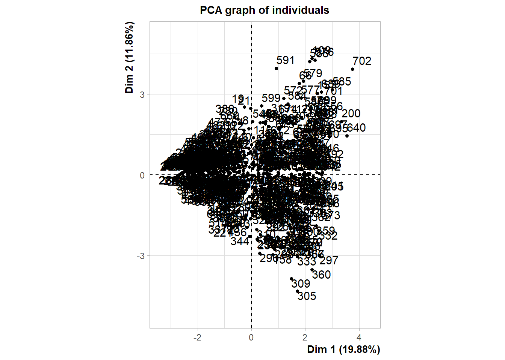
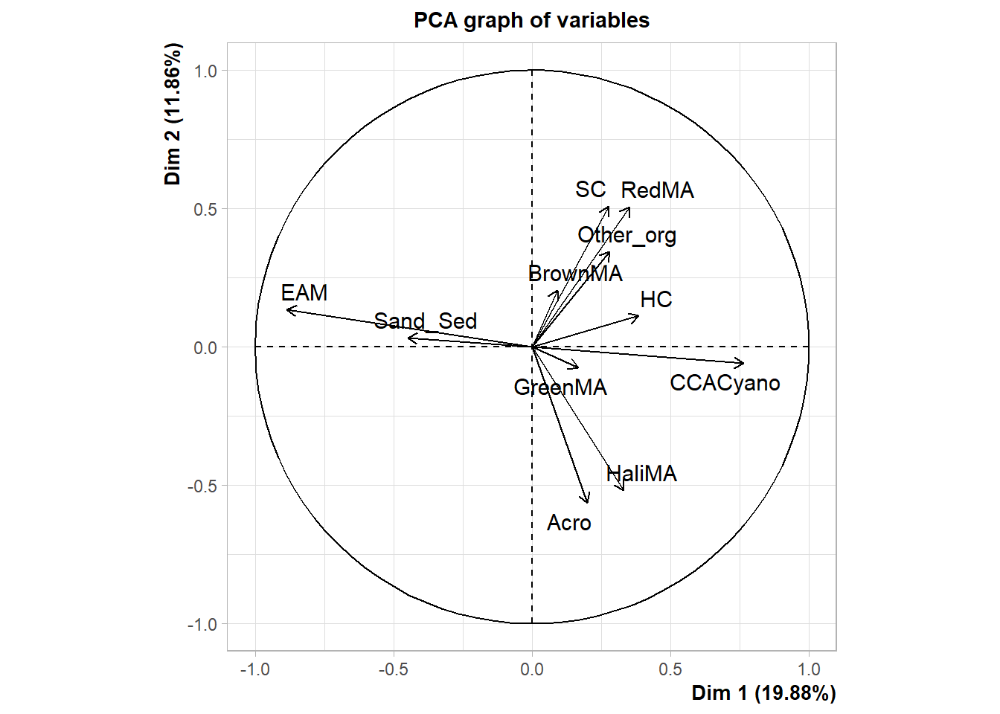
#make reef a factor
df_short <- df_short |>
mutate(Reef=factor(Reef))
#make pca by reef
fviz_pca_biplot(short.pca, label = "var",
habillage=df_short$Reef,
addEllipses=TRUE,
ellipse.level=0.95,
ggtheme = theme_minimal())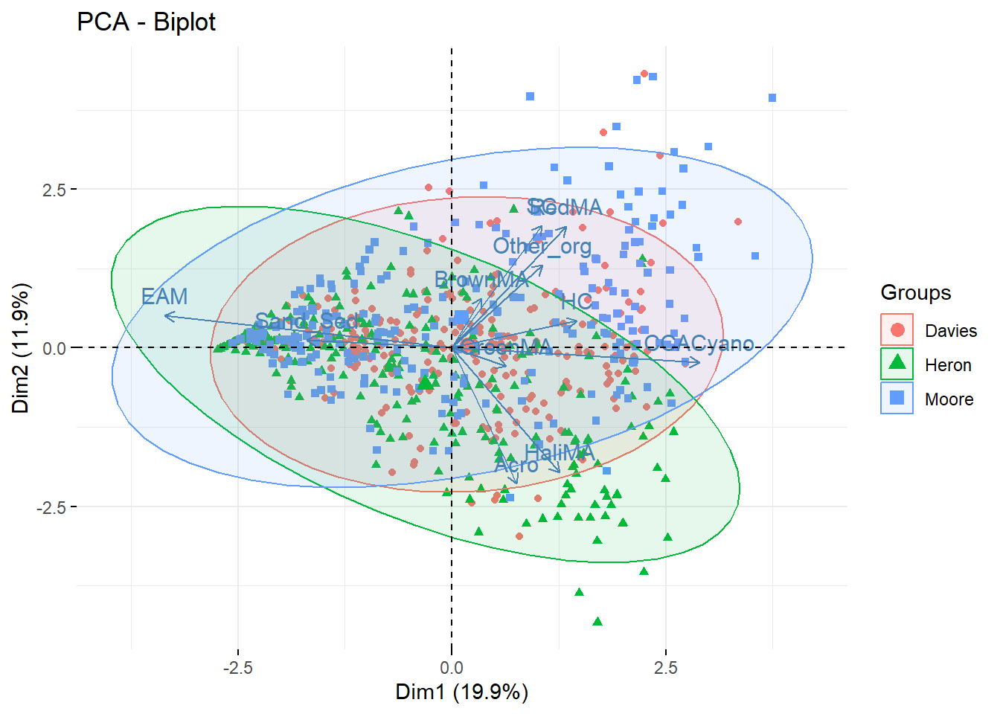
#Contributions of variables to Dim1
fviz_contrib(short.pca, choice = "var", axes = 1, top = 10) 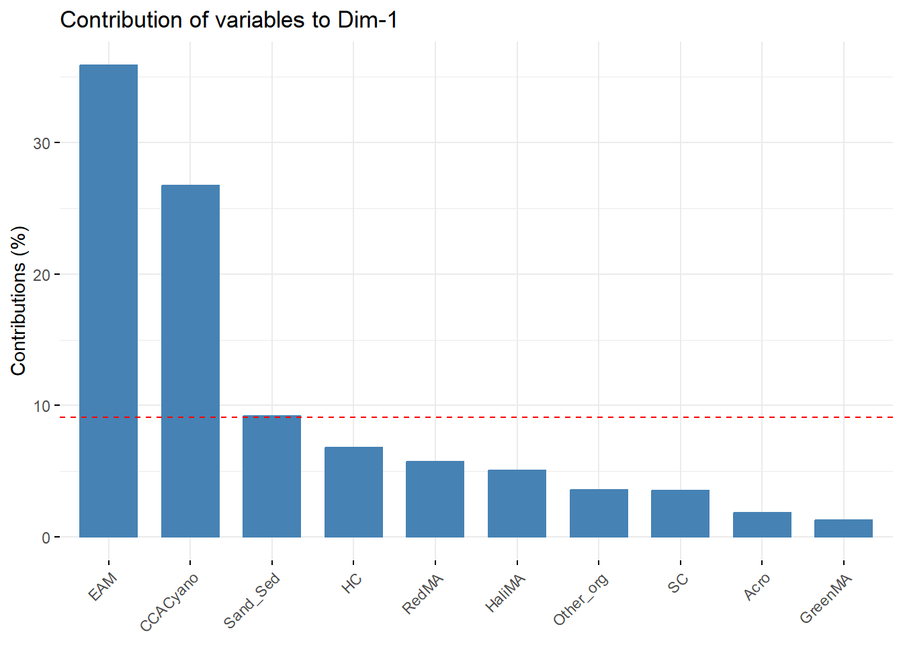
OUTPUT: Top contributions for PC1: CCA and Cyano (UPDATE: pooled these two together as these are strong posivte correlated), next EAM and then Sand and then all biologic groups
#Contributions of variables to Dim2
fviz_contrib(short.pca, choice = "var", axes = 2, top = 10)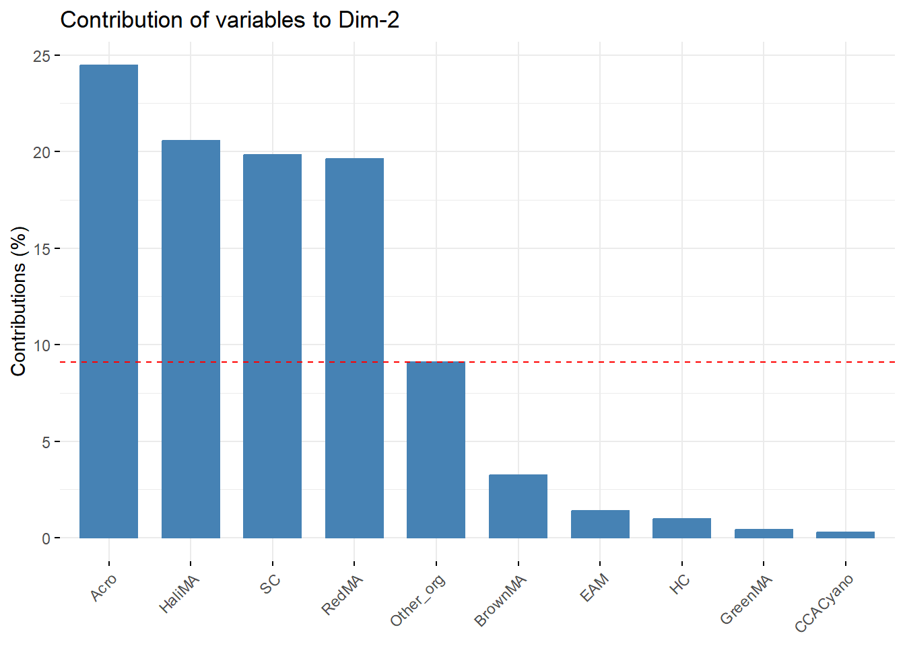
OUTPUT: Top contributions for PC2: Halimeda, then Acro_branching, HC massive, Soft Coral etc. Need to consider if all acro growthforms are pooled together and all other hard corals are pooled together. UPDATE: pooled growth forms together, so now Acro is top contributor then halimeda, then soft coral
Permanova
#scale data
df_scaled <- scale(df_short[ 2:12])
#create dist-Matrix
dist_matrix <- vegdist(df_scaled, method = "euclidean")
ResultBenthic <- adonis2(dist_matrix ~ Reef, data = df_short)
ResultBenthicPermutation test for adonis under reduced model
Terms added sequentially (first to last)
Permutation: free
Number of permutations: 999
adonis2(formula = dist_matrix ~ Reef, data = df_short)
Df SumOfSqs R2 F Pr(>F)
Reef 2 363.4 0.04693 17.283 0.001 ***
Residual 702 7380.6 0.95307
Total 704 7744.0 1.00000
---
Signif. codes: 0 '***' 0.001 '**' 0.01 '*' 0.05 '.' 0.1 ' ' 1The PERMANOVA analysis results suggest that the factor Reef explains a small but statistically significant portion of the variation in the data (R² = 0.04693, p = 0.001). Despite the small effect size, the results are statistically significant, indicating that the different reefs have distinct community compositions as captured by the distance matrix.
Correlation plot
#corr plots to identify relationships
df_short[,-1] %>%
cor %>%
corrplot(type='upper', order='FPC', diag=FALSE) 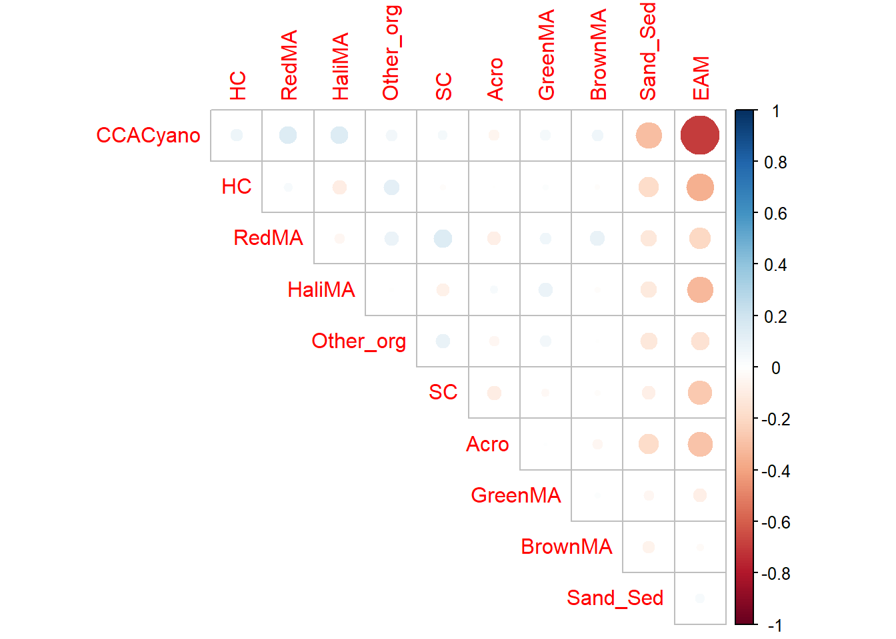
OUTPUT: CyanoCCA and EAM have a negative correlation.
PCA: Survival by Reef
#Make survival a factor
pooled_factor <- Y1BenticSurv_pooled |>
mutate(Survival = factor(Survival)) |>
select(-c(Reef, Site, ReefDev))#PCA with new dataset to show survival vs no survival
benth.pca_pooled <- PCA(pooled_factor[,-12]) 
fviz_pca_biplot(benth.pca_pooled, label = "var",
habillage=pooled_factor$Survival,
addEllipses=TRUE,
ellipse.level=0.95,
ggtheme = theme_minimal())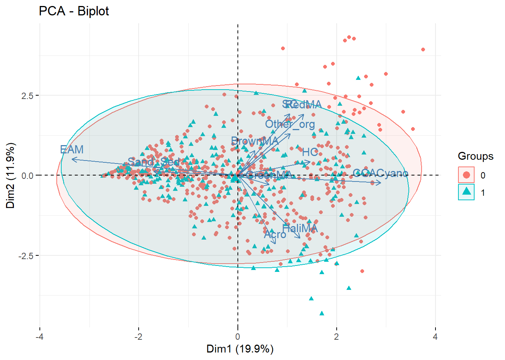
fviz_contrib(benth.pca_pooled, choice = "var", axes = 1, top = 10) OUTPUT: Top contributions for PC1: EAM and CCA&Cyano > next Sand > HC > MA > rest
#Contributions of variables to Dim2
fviz_contrib(benth.pca_pooled, choice = "var", axes = 2, top = 10)OUTPUT: Top contributions for PC2: Acro > HaliMA, SC, RedMA > Other > BrownMA etc
Permanova
#scale data
df_scaled <- scale(pooled_factor[ 1:11])
#create dist-Matrix
dist_matrix <- vegdist(df_scaled, method = "euclidean")
ResultSurvival <- adonis2(dist_matrix ~ Survival, data = pooled_factor)
ResultSurvivalPermutation test for adonis under reduced model
Terms added sequentially (first to last)
Permutation: free
Number of permutations: 999
adonis2(formula = dist_matrix ~ Survival, data = pooled_factor)
Df SumOfSqs R2 F Pr(>F)
Survival 1 25.2 0.00325 2.2926 0.016 *
Residual 703 7718.8 0.99675
Total 704 7744.0 1.00000
---
Signif. codes: 0 '***' 0.001 '**' 0.01 '*' 0.05 '.' 0.1 ' ' 1Output: Significant difference between survival groups (p= 0.015). This means the survival status (0 or 1) has a significant effect on the multivariate distances in the data. However, the R-squared value is quite low (0.00325), meaning that while the difference is statistically significant, the actual variance explained by the survival status is very small. This suggests that other factors may also play a significant role in explaining the variance in the data.
GLMs
#GLMs - start with categories with highest contribution
logit_modelCCAcyano <- glm(Survival ~ CCACyano , data = Y1BenticSurv_pooled, family = "binomial")
summary(logit_modelCCAcyano)
Call:
glm(formula = Survival ~ CCACyano, family = "binomial", data = Y1BenticSurv_pooled)
Coefficients:
Estimate Std. Error z value Pr(>|z|)
(Intercept) -0.6655 0.1196 -5.563 2.66e-08 ***
CCACyano -0.1674 0.2059 -0.813 0.416
---
Signif. codes: 0 '***' 0.001 '**' 0.01 '*' 0.05 '.' 0.1 ' ' 1
(Dispersion parameter for binomial family taken to be 1)
Null deviance: 887.47 on 704 degrees of freedom
Residual deviance: 886.80 on 703 degrees of freedom
AIC: 890.8
Number of Fisher Scoring iterations: 4OUTPUT: CyanoCCA is not significant (p=0.416)
logit_modelEAM <- glm(Survival ~ EAM , data = Y1BenticSurv_pooled, family = "binomial")
summary(logit_modelEAM)
Call:
glm(formula = Survival ~ EAM, family = "binomial", data = Y1BenticSurv_pooled)
Coefficients:
Estimate Std. Error z value Pr(>|z|)
(Intercept) -0.9291 0.1599 -5.811 6.22e-09 ***
EAM 0.4214 0.3011 1.399 0.162
---
Signif. codes: 0 '***' 0.001 '**' 0.01 '*' 0.05 '.' 0.1 ' ' 1
(Dispersion parameter for binomial family taken to be 1)
Null deviance: 887.47 on 704 degrees of freedom
Residual deviance: 885.50 on 703 degrees of freedom
AIC: 889.5
Number of Fisher Scoring iterations: 4OUTPUT: EAM is not significant (p=0.162)
logit_modelAcro <- glm(Survival ~ Acro , data = Y1BenticSurv_pooled, family = "binomial")
summary(logit_modelAcro)
Call:
glm(formula = Survival ~ Acro, family = "binomial", data = Y1BenticSurv_pooled)
Coefficients:
Estimate Std. Error z value Pr(>|z|)
(Intercept) -0.64160 0.09672 -6.633 3.28e-11 ***
Acro -1.26256 0.73024 -1.729 0.0838 .
---
Signif. codes: 0 '***' 0.001 '**' 0.01 '*' 0.05 '.' 0.1 ' ' 1
(Dispersion parameter for binomial family taken to be 1)
Null deviance: 887.47 on 704 degrees of freedom
Residual deviance: 884.33 on 703 degrees of freedom
AIC: 888.33
Number of Fisher Scoring iterations: 4OUTPUT: Acro is not significant (p=0.0)
logit_modelHali <- glm(Survival ~ HaliMA , data = Y1BenticSurv_pooled, family = "binomial")
summary(logit_modelHali)
Call:
glm(formula = Survival ~ HaliMA, family = "binomial", data = Y1BenticSurv_pooled)
Coefficients:
Estimate Std. Error z value Pr(>|z|)
(Intercept) -0.85032 0.08862 -9.595 <2e-16 ***
HaliMA 2.91809 0.90085 3.239 0.0012 **
---
Signif. codes: 0 '***' 0.001 '**' 0.01 '*' 0.05 '.' 0.1 ' ' 1
(Dispersion parameter for binomial family taken to be 1)
Null deviance: 887.47 on 704 degrees of freedom
Residual deviance: 876.75 on 703 degrees of freedom
AIC: 880.75
Number of Fisher Scoring iterations: 4OUTPUT: Halimeda is significant (p = 0.0012)
#GLMs - start with categories with highest contribution
logit_modelHC <- glm(Survival ~ HC , data = Y1BenticSurv_pooled, family = "binomial")
summary(logit_modelHC)
Call:
glm(formula = Survival ~ HC, family = "binomial", data = Y1BenticSurv_pooled)
Coefficients:
Estimate Std. Error z value Pr(>|z|)
(Intercept) -0.73479 0.10976 -6.695 2.16e-11 ***
HC -0.03367 0.74368 -0.045 0.964
---
Signif. codes: 0 '***' 0.001 '**' 0.01 '*' 0.05 '.' 0.1 ' ' 1
(Dispersion parameter for binomial family taken to be 1)
Null deviance: 887.47 on 704 degrees of freedom
Residual deviance: 887.46 on 703 degrees of freedom
AIC: 891.46
Number of Fisher Scoring iterations: 4Figures
CCA&Cyano
#Plotting significant results
ggplot(Y1BenticSurv_pooled, aes(x = CCACyano, y = Survival)) +
geom_point() +
geom_smooth(method = "glm", method.args = list(family = "binomial"), se = TRUE) +
theme_bw() +
ylab("Proportion Survival") +
theme(axis.text = element_text(angle = 90, vjust = 0.5))`geom_smooth()` using formula = 'y ~ x'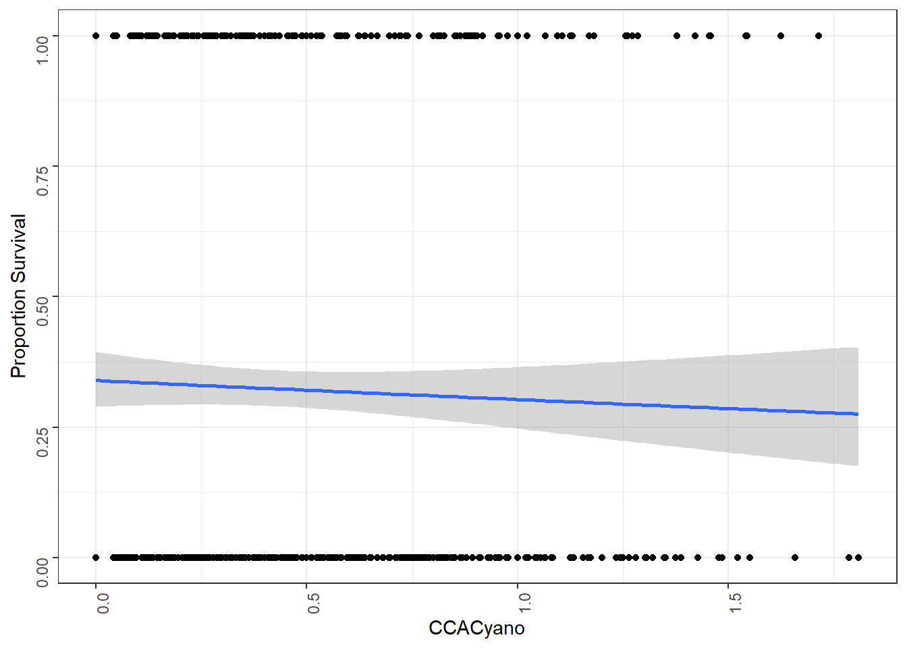
Epilithic algal matrix (EAM)
ggplot(Y1BenticSurv_pooled, aes(x = EAM, y = Survival)) +
geom_point() +
geom_smooth(method = "glm", method.args = list(family = "binomial"), se = TRUE) +
theme_bw() +
ylab("Proportion Survival") +
theme(axis.text = element_text(angle = 90, vjust = 0.5))`geom_smooth()` using formula = 'y ~ x'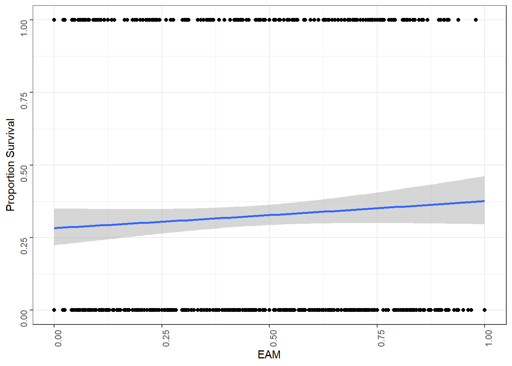
Sand
ggplot(Y1BenticSurv_pooled, aes(x = Sand_Sed, y = Survival)) +
geom_point() +
geom_smooth(method = "glm", method.args = list(family = "binomial"), se = TRUE) +
theme_bw() +
ylab("Proportion Survival") +
theme(axis.text = element_text(angle = 90, vjust = 0.5))`geom_smooth()` using formula = 'y ~ x'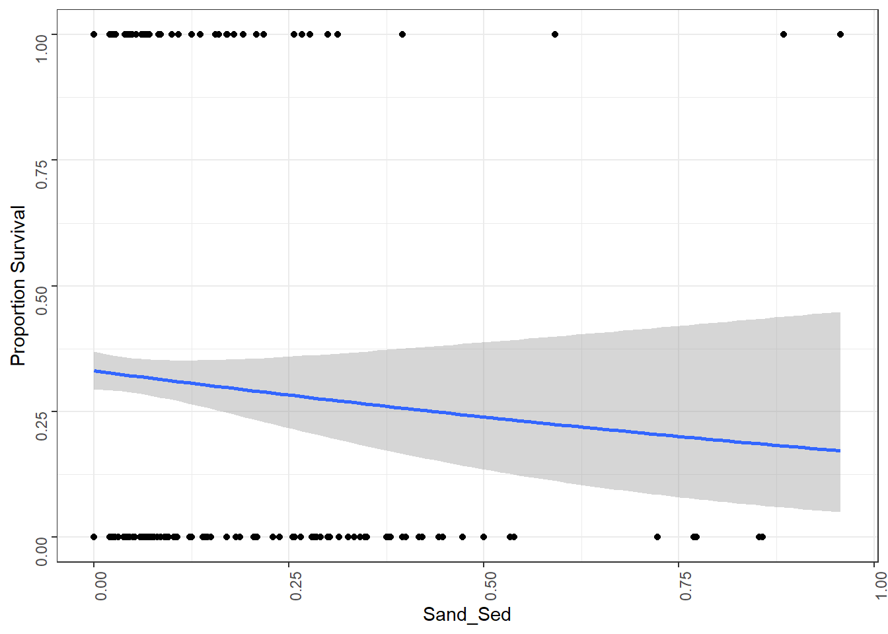
Acro
ggplot(Y1BenticSurv_pooled, aes(x = Acro, y = Survival)) +
geom_point() +
geom_smooth(method = "glm", method.args = list(family = "binomial"), se = TRUE) +
theme_bw() +
ylab("Proportion Survival") +
theme(axis.text = element_text(angle = 90, vjust = 0.5))`geom_smooth()` using formula = 'y ~ x'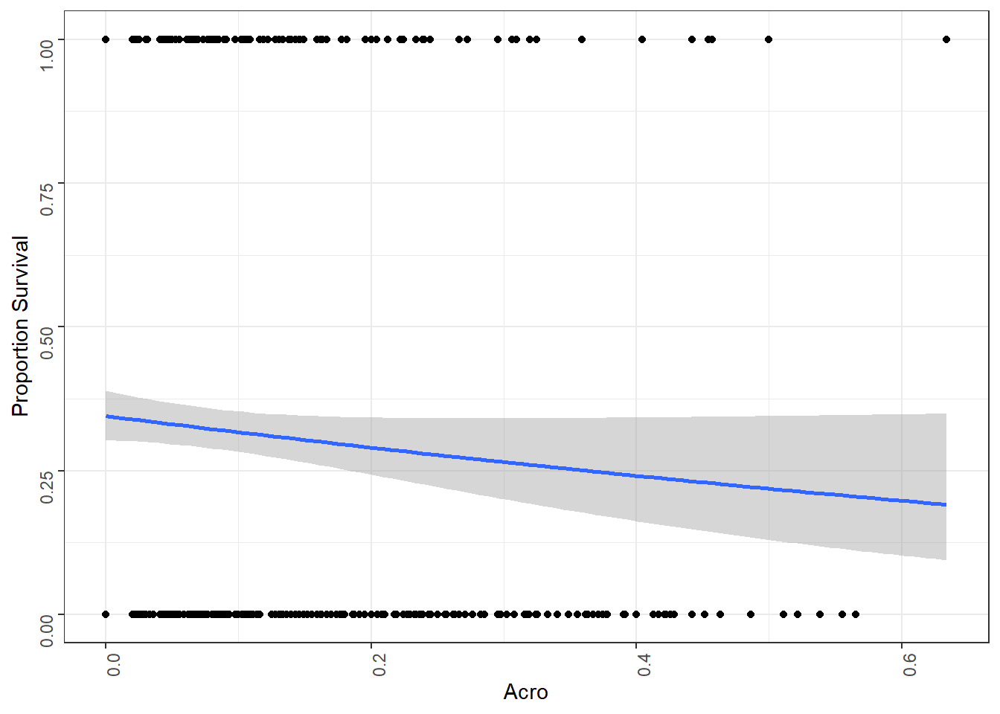
Hard coral
ggplot(Y1BenticSurv_pooled, aes(x = HC, y = Survival)) +
geom_point() +
geom_smooth(method = "glm", method.args = list(family = "binomial"), se = TRUE) +
theme_bw() +
ylab("Proportion Survival") +
theme(axis.text = element_text(angle = 90, vjust = 0.5))`geom_smooth()` using formula = 'y ~ x'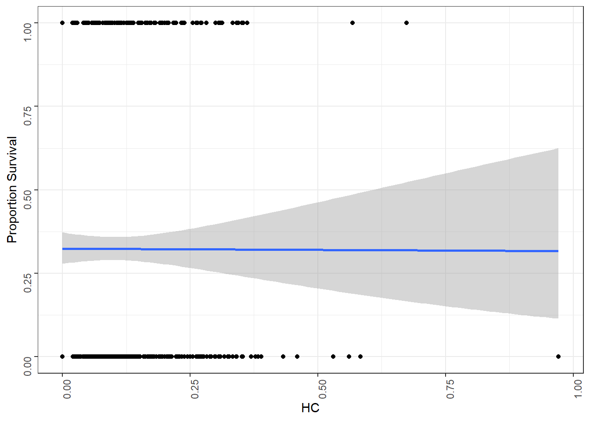
Soft Coral
ggplot(Y1BenticSurv_pooled, aes(x = SC, y = Survival)) +
geom_point() +
geom_smooth(method = "glm", method.args = list(family = "binomial"), se = TRUE) +
theme_bw() +
ylab("Proportion Survival") +
theme(axis.text = element_text(angle = 90, vjust = 0.5))`geom_smooth()` using formula = 'y ~ x'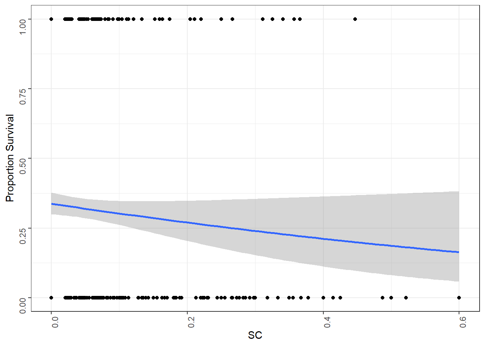
Halimeda
ggplot(Y1BenticSurv_pooled, aes(x = HaliMA, y = Survival)) +
geom_point() +
geom_smooth(method = "glm", method.args = list(family = "binomial"), se = TRUE) +
theme_bw() +
ylab("Proportion Survival") +
theme(axis.text = element_text(angle = 90, vjust = 0.5))`geom_smooth()` using formula = 'y ~ x'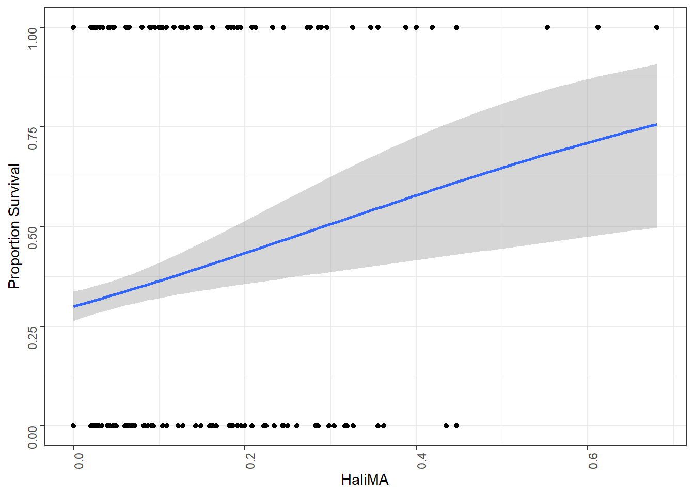
-------------------------------------------------------------------
DAVIES
Davies <- Y1BenticSurv_pooled |> filter(Reef == "Davies")
#Filter rows to keep only those present in Y1 Survival
Davies <- Davies |>
filter(!is.na(Survival),
!is.na(Sand_Sed))PCA: Community Composition
#Remove variables you won't use in PCA
Davies_short <- subset(Davies, select = -c(Reef, ReefDev, Survival))
#PCA benthic cover data
davies.pca <- PCA(Davies[,-c(1:3)])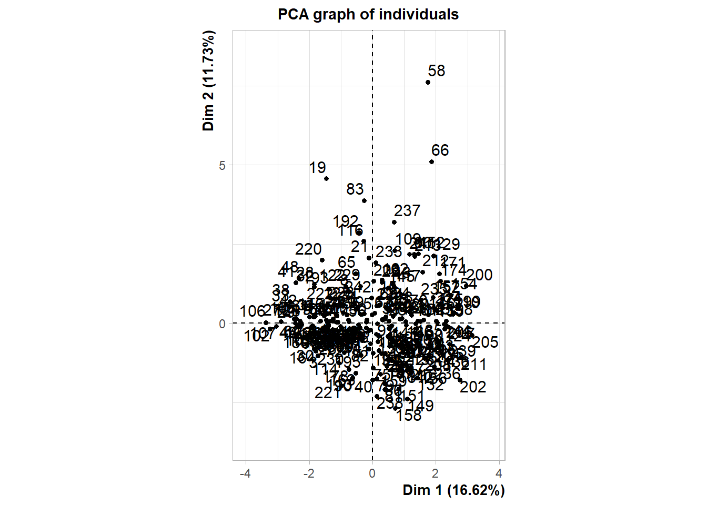
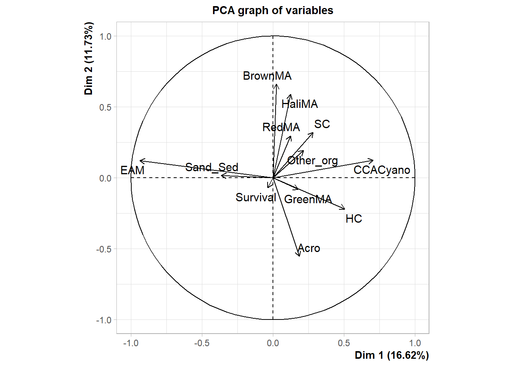
Davies_factor <- Davies|>
mutate(Site=factor(Site))Figure 1
pca_biplot_Davies<- fviz_pca_biplot(davies.pca,
label = "var",
habillage=Davies_factor$Site,
addEllipses=TRUE,
ellipse.level=0.95,
ggtheme = theme_minimal())
plot_Davies_ComCompSite <- pca_biplot_Davies +
ggtitle("Davies Reef")
plot_Davies_ComCompSite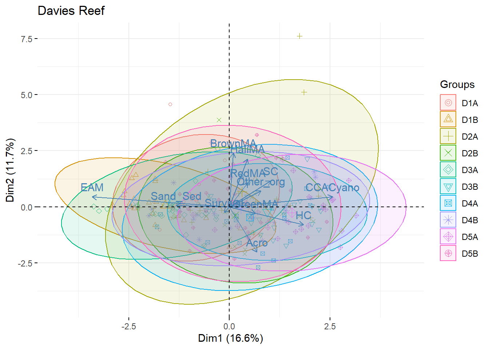
#Contributions of variables to Dim1
fviz_contrib(davies.pca, choice = "var", axes = 1, top = 10)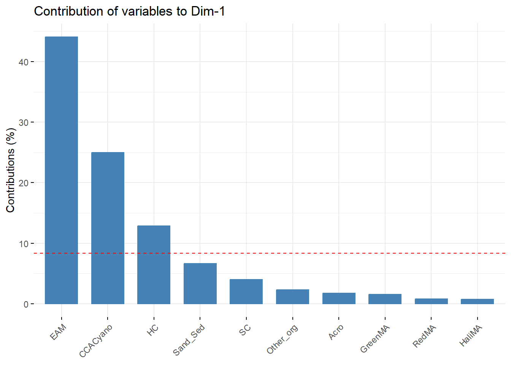
OUTPUT: EAM 44.1%, CCACyano 24.9%, HC 12.9%, Sand 6.7%, rest #
#Contributions of variables to Dim2
fviz_contrib(davies.pca, choice = "var", axes = 2, top = 10)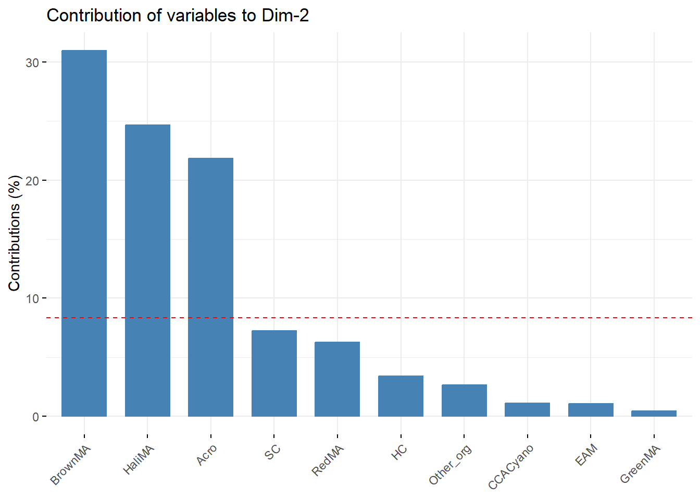
OUTPUT: BrownMA 31.6%, HaliMA 24.9%, Acro 21.0%, SoftCor 6.6%, rest
#Calculate exact values of contributions
contributions <- davies.pca$var$contrib
dim1_contributions <- contributions[, 1]
dim2_contributions <- contributions[, 2]#Create a data frame with the contributions and sort by strongest contributing variables for PC1
contributions1_df <- data.frame( Variable = rownames(contributions),
Contribution_Dim1 = dim1_contributions,
Contribution_Dim2 = dim2_contributions) |>
arrange(desc(Contribution_Dim1))
contributions1_df Variable Contribution_Dim1 Contribution_Dim2
EAM EAM 44.08654795 1.06285038
CCACyano CCACyano 24.98302985 1.09611709
HC HC 12.89433303 3.40674118
Sand_Sed Sand_Sed 6.65450942 0.01772841
SC SC 4.02219080 7.24943199
Other_org Other_org 2.34213316 2.64864244
Acro Acro 1.75959016 21.82639880
GreenMA GreenMA 1.59959754 0.46326523
RedMA RedMA 0.79136367 6.26651082
HaliMA HaliMA 0.76802174 24.64680971
Survival Survival 0.06468911 0.33451124
BrownMA BrownMA 0.03399358 30.98099270#Create a data frame with the contributions and sort by strongest contributing variables for PC2
contributions2_df <- data.frame( Variable = rownames(contributions),
Contribution_Dim1 = dim1_contributions,
Contribution_Dim2 = dim2_contributions) |>
arrange(desc(Contribution_Dim2))
contributions2_df Variable Contribution_Dim1 Contribution_Dim2
BrownMA BrownMA 0.03399358 30.98099270
HaliMA HaliMA 0.76802174 24.64680971
Acro Acro 1.75959016 21.82639880
SC SC 4.02219080 7.24943199
RedMA RedMA 0.79136367 6.26651082
HC HC 12.89433303 3.40674118
Other_org Other_org 2.34213316 2.64864244
CCACyano CCACyano 24.98302985 1.09611709
EAM EAM 44.08654795 1.06285038
GreenMA GreenMA 1.59959754 0.46326523
Survival Survival 0.06468911 0.33451124
Sand_Sed Sand_Sed 6.65450942 0.01772841Permanova
#scale data
Scaleddavies <- scale(Davies[ 4:14])
#create dist-Matrix
dist_matrix <- vegdist(Scaleddavies, method = "euclidean")
DaviesPerm <- adonis2(dist_matrix ~ Site, data = Davies)
DaviesPermPermutation test for adonis under reduced model
Terms added sequentially (first to last)
Permutation: free
Number of permutations: 999
adonis2(formula = dist_matrix ~ Site, data = Davies)
Df SumOfSqs R2 F Pr(>F)
Site 9 336.13 0.12679 3.743 0.001 ***
Residual 232 2314.87 0.87321
Total 241 2651.00 1.00000
---
Signif. codes: 0 '***' 0.001 '**' 0.01 '*' 0.05 '.' 0.1 ' ' 1OUTPUT: Site is significant (R2 = 0.12679, p = 0.001)
Correlation plot
#corr plots to identify relationships
Davies[,-c(1:3)] %>% cor %>%
corrplot(type='upper',
order='FPC',
diag=FALSE)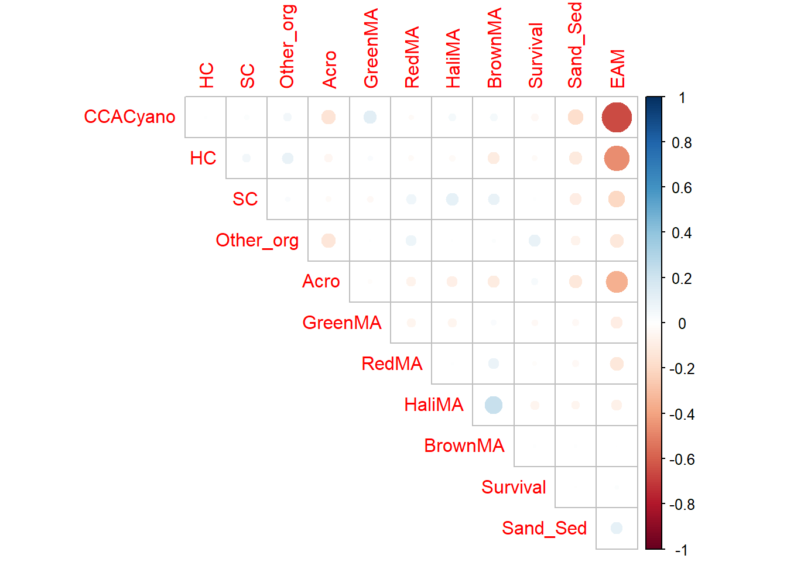
PCA: Survival by Site
#new dataset for PCA
Davies_short2 <- subset(Davies, select = -c(Site, ReefDev, Reef))
#Convert Survival to factor
Davies_short2 <- Davies_short2 |>
mutate(Survival=factor(Survival))
#PCA with new dataset to show survival vs no survival
daviessurv.pca <- PCA(Davies_short2[,-12])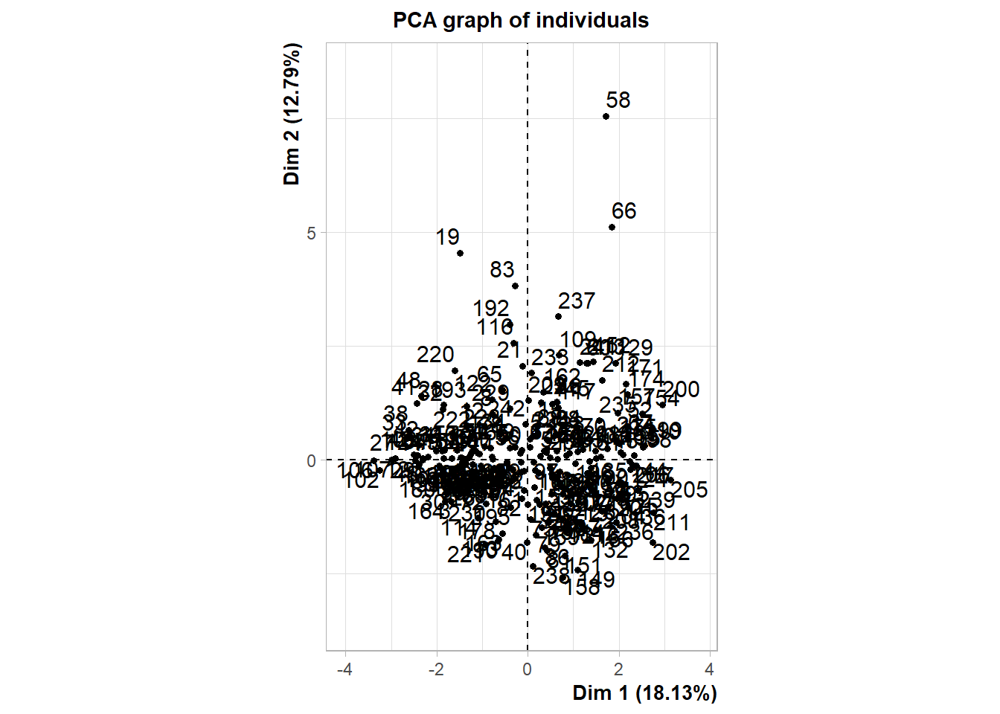
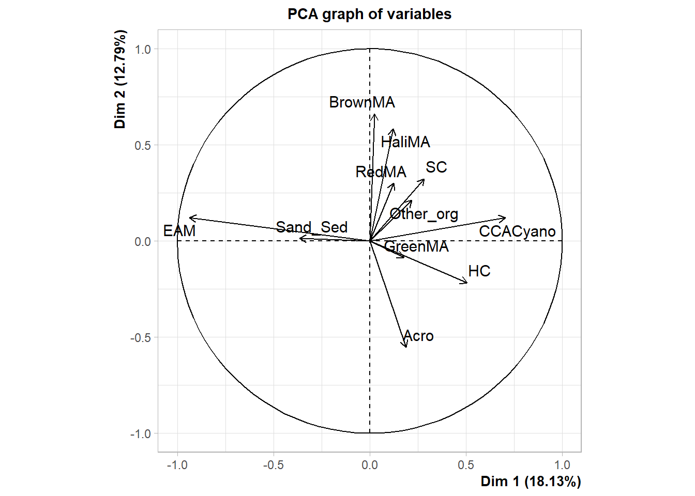
Figure 2
#Visualize PCA Biplot – FIGURE 2
plot_Davies_Survival <- fviz_pca_biplot(daviessurv.pca,
label = "var",
habillage=Davies_short2$Survival,
addEllipses=TRUE,
ellipse.level=0.95,
ggtheme = theme_minimal())
plot_Davies_Survival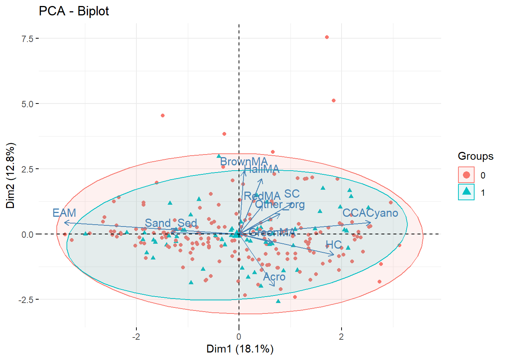
Permanova
#scale data
df_scaled <- scale(Davies_short2[ 1:11])
#create dist-Matrix
dist_matrix <- vegdist(df_scaled, method = "euclidean")
ResultSurvival <- adonis2(dist_matrix ~ Survival, data = Davies_short2)
ResultSurvivalPermutation test for adonis under reduced model
Terms added sequentially (first to last)
Permutation: free
Number of permutations: 999
adonis2(formula = dist_matrix ~ Survival, data = Davies_short2)
Df SumOfSqs R2 F Pr(>F)
Survival 1 4.46 0.00168 0.4046 0.957
Residual 240 2646.54 0.99832
Total 241 2651.00 1.00000 Output: No significant difference between survival groups (p=0.949)
Extract values and interpretation of values
# Extract eigenvalues (variance explained by each principal component)
eigenvalues <- daviessurv.pca$eig
#Extract variable contributions to the principal components
var_contributions <- daviessurv.pca$var$contrib
#Extract coordinates of the variables
var_coordinates <- daviessurv.pca$var$coord
#Extract the coordinates of the individuals
ind_coordinates <- daviessurv.pca$ind$coord
# Display the results
list( eigenvalues = eigenvalues,
var_contributions = var_contributions,
var_coordinates = var_coordinates)$eigenvalues
eigenvalue percentage of variance cumulative percentage of variance
comp 1 1.99395072 18.12682476 18.12682
comp 2 1.40644923 12.78590208 30.91273
comp 3 1.17223406 10.65667331 41.56940
comp 4 1.13681182 10.33465295 51.90405
comp 5 0.99061932 9.00563019 60.90968
comp 6 0.95761967 8.70563340 69.61532
comp 7 0.91564672 8.32406112 77.93938
comp 8 0.86914223 7.90129303 85.84067
comp 9 0.81828078 7.43891614 93.27959
comp 10 0.73118702 6.64715475 99.92674
comp 11 0.00805841 0.07325827 100.00000
$var_contributions
Dim.1 Dim.2 Dim.3 Dim.4 Dim.5
Sand_Sed 6.67421552 0.01174941 3.2235425 0.57545116 0.1485031
SC 4.03355927 7.44530650 10.7198729 5.48622316 2.5086164
BrownMA 0.03324315 31.08918351 2.8769622 5.32392779 0.4545161
GreenMA 1.58232698 0.53463778 9.7008486 23.82815350 1.9665210
HaliMA 0.74188097 24.18003785 8.6838904 1.45577924 13.1199741
RedMA 0.78817309 6.41830987 0.1757124 16.55931943 53.9348228
Other_org 2.41915449 3.17328284 20.1111029 16.12986781 0.1665482
EAM 44.12190652 1.04615417 0.6687162 0.07514996 0.2805598
CCACyano 24.91956967 1.02637866 4.8704807 16.10843087 1.8505147
Acro 1.78797172 21.71332482 36.1791171 0.21519859 3.9441034
HC 12.89799864 3.36163460 2.7897540 14.24249850 21.6253204
$var_coordinates
Dim.1 Dim.2 Dim.3 Dim.4 Dim.5
Sand_Sed -0.36480210 0.01285494 -0.19438998 -0.08088137 -0.03835492
SC 0.28359687 0.32359613 0.35448837 0.24973593 -0.15764149
BrownMA 0.02574591 0.66125153 0.18364294 -0.24601431 0.06710086
GreenMA 0.17762551 -0.08671453 -0.33721900 -0.52046255 0.13957341
HaliMA 0.12162541 0.58316375 0.31905410 -0.12864475 -0.36051213
RedMA 0.12536261 0.30045011 0.04538459 0.43387591 0.73095060
Other_org 0.21962866 0.21125958 -0.48554011 0.42821285 0.04061845
EAM -0.93796006 0.12129974 -0.08853767 0.02922864 -0.05271887
CCACyano 0.70489995 0.12014780 -0.23894232 -0.42792820 0.13539408
Acro 0.18881545 -0.55261821 0.65123263 -0.04946113 0.19766398
HC 0.50712892 -0.21743892 -0.18083818 0.40238092 -0.46284404Eigenvalues Dataframe - These represent the amount of variance explained by each principal component.
eigenvalues_df <- data.frame(Dimension = 1:nrow(eigenvalues),
Eigenvalue = eigenvalues[, 1],
PercentageOfVariance = eigenvalues[, 2],
CumulativePercentage = eigenvalues[, 3] )
print(eigenvalues_df) Dimension Eigenvalue PercentageOfVariance CumulativePercentage
comp 1 1 1.99395072 18.12682476 18.12682
comp 2 2 1.40644923 12.78590208 30.91273
comp 3 3 1.17223406 10.65667331 41.56940
comp 4 4 1.13681182 10.33465295 51.90405
comp 5 5 0.99061932 9.00563019 60.90968
comp 6 6 0.95761967 8.70563340 69.61532
comp 7 7 0.91564672 8.32406112 77.93938
comp 8 8 0.86914223 7.90129303 85.84067
comp 9 9 0.81828078 7.43891614 93.27959
comp 10 10 0.73118702 6.64715475 99.92674
comp 11 11 0.00805841 0.07325827 100.00000Variables contributions dataframe - These indicate how much each variable contributes to each principal component.
var_contributions_df <- as.data.frame(var_contributions)
print(var_contributions_df) Dim.1 Dim.2 Dim.3 Dim.4 Dim.5
Sand_Sed 6.67421552 0.01174941 3.2235425 0.57545116 0.1485031
SC 4.03355927 7.44530650 10.7198729 5.48622316 2.5086164
BrownMA 0.03324315 31.08918351 2.8769622 5.32392779 0.4545161
GreenMA 1.58232698 0.53463778 9.7008486 23.82815350 1.9665210
HaliMA 0.74188097 24.18003785 8.6838904 1.45577924 13.1199741
RedMA 0.78817309 6.41830987 0.1757124 16.55931943 53.9348228
Other_org 2.41915449 3.17328284 20.1111029 16.12986781 0.1665482
EAM 44.12190652 1.04615417 0.6687162 0.07514996 0.2805598
CCACyano 24.91956967 1.02637866 4.8704807 16.10843087 1.8505147
Acro 1.78797172 21.71332482 36.1791171 0.21519859 3.9441034
HC 12.89799864 3.36163460 2.7897540 14.24249850 21.6253204INTERPRETATION:
Eigenvalues: The first two principal components (PC1 and PC2) together explain approximately 30.91% of the total variance in the dataset. Including up to PC4, the cumulative variance explained is 51.90%, indicating that the first four components capture about half of the total variability.
Variable Contributions: PC1 is mainly driven by EAM, CCACyano, and HC, accounting for 18.13% of the variance. PC2 is significantly influenced by BrownMA, HaliMA, Acro, and SC, explaining 12.79% of the variance. PC3 is dominated by Acro and Other_org, accounting for 10.66% of the variance. PC4 sees contributions from RedMA, CCACyano, Other_org, HC, and GreenMA, explaining 10.33% of the variance. PC5 is heavily influenced by RedMA, explaining 9.01% of the variance.
The PCA results suggest that the different types of macroalgae (BrownMA, GreenMA, HaliMA, RedMA), other organisms (Other_org), and other environmental variables (EAM, CCACyano, HC) contribute differently to the variability in the data. The first few components capture a significant portion of this variability, indicating their importance in distinguishing sites.
GLMs
#GLMs - start with categories with highest contribution
glm_davies_CCACyano <- glm(Survival ~ CCACyano , data = Davies, family = "binomial")
summary(glm_davies_CCACyano)
Call:
glm(formula = Survival ~ CCACyano, family = "binomial", data = Davies)
Coefficients:
Estimate Std. Error z value Pr(>|z|)
(Intercept) -1.0086 0.2461 -4.099 4.15e-05 ***
CCACyano -0.2558 0.4124 -0.620 0.535
---
Signif. codes: 0 '***' 0.001 '**' 0.01 '*' 0.05 '.' 0.1 ' ' 1
(Dispersion parameter for binomial family taken to be 1)
Null deviance: 268.82 on 241 degrees of freedom
Residual deviance: 268.43 on 240 degrees of freedom
AIC: 272.43
Number of Fisher Scoring iterations: 4glm_davies_EAM <- glm(Survival ~ EAM , data = Davies, family = "binomial")
summary(glm_davies_EAM)
Call:
glm(formula = Survival ~ EAM, family = "binomial", data = Davies)
Coefficients:
Estimate Std. Error z value Pr(>|z|)
(Intercept) -1.1899 0.3152 -3.775 0.00016 ***
EAM 0.1306 0.6228 0.210 0.83387
---
Signif. codes: 0 '***' 0.001 '**' 0.01 '*' 0.05 '.' 0.1 ' ' 1
(Dispersion parameter for binomial family taken to be 1)
Null deviance: 268.82 on 241 degrees of freedom
Residual deviance: 268.78 on 240 degrees of freedom
AIC: 272.78
Number of Fisher Scoring iterations: 4glm_davies_Acro <- glm(Survival ~ Acro , data = Davies, family = "binomial")
summary(glm_davies_Acro)
Call:
glm(formula = Survival ~ Acro, family = "binomial", data = Davies)
Coefficients:
Estimate Std. Error z value Pr(>|z|)
(Intercept) -1.1919 0.1847 -6.454 1.09e-10 ***
Acro 0.6316 1.1063 0.571 0.568
---
Signif. codes: 0 '***' 0.001 '**' 0.01 '*' 0.05 '.' 0.1 ' ' 1
(Dispersion parameter for binomial family taken to be 1)
Null deviance: 268.82 on 241 degrees of freedom
Residual deviance: 268.51 on 240 degrees of freedom
AIC: 272.51
Number of Fisher Scoring iterations: 4glm_davies_BrownMA <- glm(Survival ~ BrownMA , data = Davies, family = "binomial")
summary(glm_davies_BrownMA)
Call:
glm(formula = Survival ~ BrownMA, family = "binomial", data = Davies)
Coefficients:
Estimate Std. Error z value Pr(>|z|)
(Intercept) -1.138 0.156 -7.299 2.91e-13 ***
BrownMA 2.464 16.365 0.151 0.88
---
Signif. codes: 0 '***' 0.001 '**' 0.01 '*' 0.05 '.' 0.1 ' ' 1
(Dispersion parameter for binomial family taken to be 1)
Null deviance: 268.82 on 241 degrees of freedom
Residual deviance: 268.80 on 240 degrees of freedom
AIC: 272.8
Number of Fisher Scoring iterations: 4glm_davies_HaliMA <- glm(Survival ~ HaliMA , data = Davies, family = "binomial")
summary(glm_davies_HaliMA)
Call:
glm(formula = Survival ~ HaliMA, family = "binomial", data = Davies)
Coefficients:
Estimate Std. Error z value Pr(>|z|)
(Intercept) -1.0809 0.1575 -6.862 6.78e-12 ***
HaliMA -8.7332 9.7141 -0.899 0.369
---
Signif. codes: 0 '***' 0.001 '**' 0.01 '*' 0.05 '.' 0.1 ' ' 1
(Dispersion parameter for binomial family taken to be 1)
Null deviance: 268.82 on 241 degrees of freedom
Residual deviance: 267.79 on 240 degrees of freedom
AIC: 271.79
Number of Fisher Scoring iterations: 4glm_davies_HC <- glm(Survival ~ HC , data = Davies, family = "binomial")
summary(glm_davies_HC)
Call:
glm(formula = Survival ~ HC, family = "binomial", data = Davies)
Coefficients:
Estimate Std. Error z value Pr(>|z|)
(Intercept) -1.0681 0.2286 -4.673 2.97e-06 ***
HC -0.4523 1.2400 -0.365 0.715
---
Signif. codes: 0 '***' 0.001 '**' 0.01 '*' 0.05 '.' 0.1 ' ' 1
(Dispersion parameter for binomial family taken to be 1)
Null deviance: 268.82 on 241 degrees of freedom
Residual deviance: 268.69 on 240 degrees of freedom
AIC: 272.69
Number of Fisher Scoring iterations: 4glm_davies_SC <- glm(Survival ~ SC , data = Davies, family = "binomial")
summary(glm_davies_SC)
Call:
glm(formula = Survival ~ SC, family = "binomial", data = Davies)
Coefficients:
Estimate Std. Error z value Pr(>|z|)
(Intercept) -1.1408 0.1635 -6.979 2.97e-12 ***
SC 0.4782 3.4918 0.137 0.891
---
Signif. codes: 0 '***' 0.001 '**' 0.01 '*' 0.05 '.' 0.1 ' ' 1
(Dispersion parameter for binomial family taken to be 1)
Null deviance: 268.82 on 241 degrees of freedom
Residual deviance: 268.81 on 240 degrees of freedom
AIC: 272.81
Number of Fisher Scoring iterations: 4SAVE FIGURES
#FIGURE 1
plot_Davies_ComCompSite <- fviz_pca_biplot(davies.pca,
label = "var",
habillage=Davies_factor$Site,
addEllipses=TRUE,
ellipse.level=0.95,
ggtheme = theme_minimal()) +
ggtitle("Davies Reef") +
labs(color = "Sites", shape = "Sites") +
guides(color = guide_legend(title = "Sites"),
fill = guide_legend(title = "Sites"),
shape = guide_legend(title = "Sites"))
#FIGURE 2
plot_Davies_Survival <- fviz_pca_biplot(daviessurv.pca,
label = "var",
habillage=Davies_short2$Survival,
addEllipses=TRUE,
ellipse.level=0.95,
ggtheme = theme_minimal()) +
ggtitle("Davies Reef") +
labs(color = "Survival", shape = "Survival") +
guides(color = guide_legend(title = "Survival"),
fill = guide_legend(title = "Survival"),
shape = guide_legend(title = "Survival"))
ggsave("C:/Users/sjurriaa/Australian Institute of Marine Science/Carly Randall - Randall Lab/CAD/CAD Year1/output/Community Composition/PCA_Davies_Sites.jpeg", plot = plot_Davies_ComCompSite, width = 6, height = 4, dpi = 600)
ggsave("C:/Users/sjurriaa/Australian Institute of Marine Science/Carly Randall - Randall Lab/CAD/CAD Year1/output/Community Composition/PCA_Davies_Survival.jpeg", plot = plot_Davies_Survival, width = 6, height = 4, dpi = 600)---------------------------------------------------------
HERON
Heron <- Y1BenticSurv_pooled |> filter(Reef == "Heron")
#Filter rows to keep only those present in Y1 Survival
Heron <- Heron |>
filter(!is.na(Survival),
!is.na(Sand_Sed))PCA: Community Composition
#Remove variables you won't use in PCA
Heron_short <- subset(Heron, select = -c(Reef, ReefDev, Survival))
#PCA benthic cover data
heron.pca <- PCA(Heron[,-c(1:3)])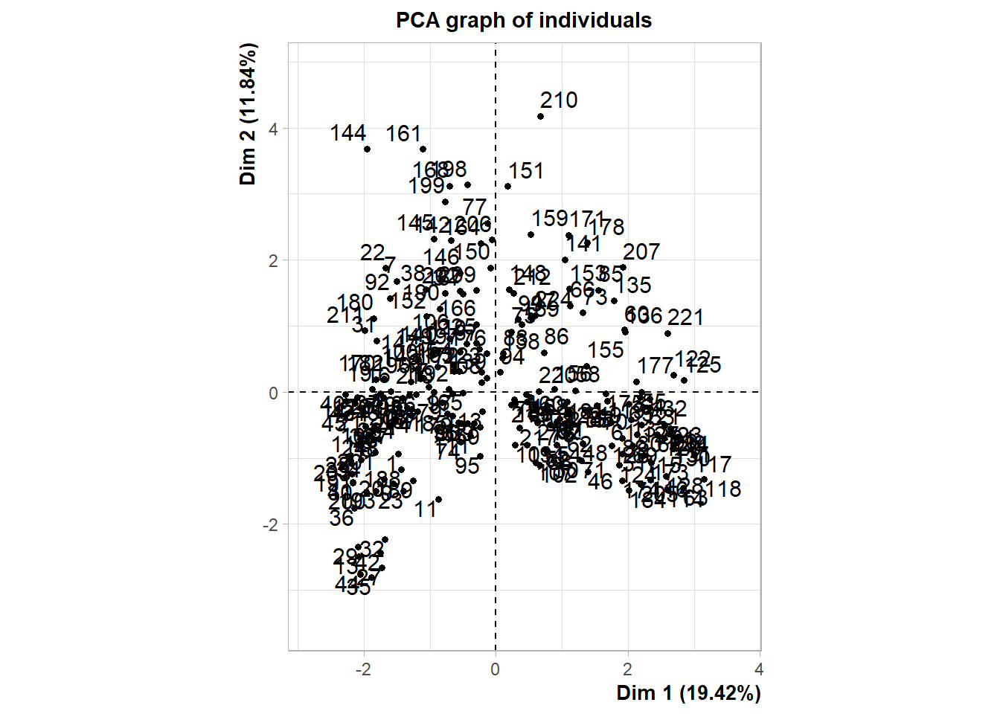

Heron_factor <- Heron|>
mutate(Site=factor(Site))Figure 1
pca_biplot_Heron<- fviz_pca_biplot(heron.pca,
label = "var",
habillage=Heron_factor$Site,
addEllipses=TRUE,
ellipse.level=0.95,
ggtheme = theme_minimal())
plot_Heron_ComCompSite <- pca_biplot_Heron +
ggtitle("Heron Reef")
plot_Heron_ComCompSite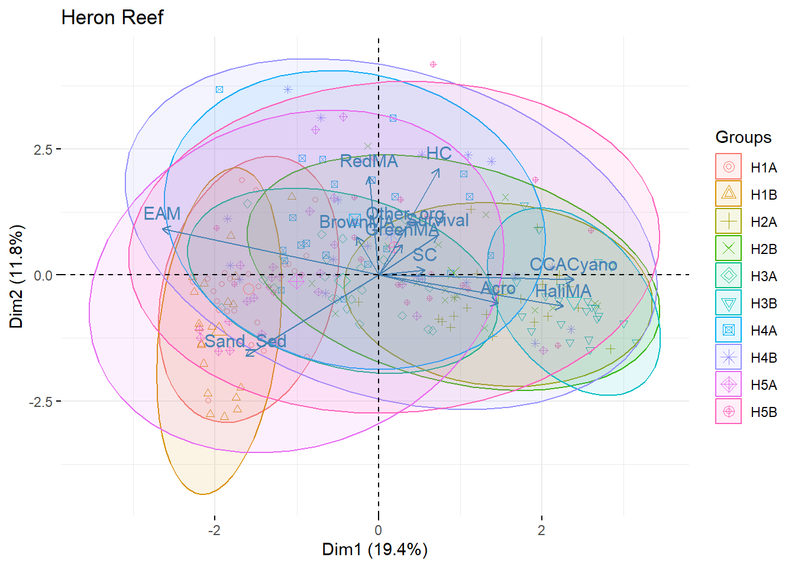
#Contributions of variables to Dim1
fviz_contrib(heron.pca, choice = "var", axes = 1, top = 10)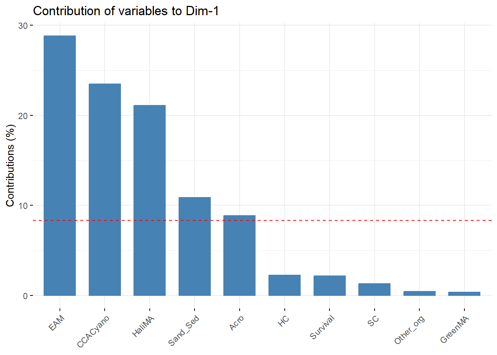
OUTPUT: EAM 44.1%, CCACyano 24.9%, HC 12.9%, Sand 6.7%, rest #
#Contributions of variables to Dim2
fviz_contrib(heron.pca, choice = "var", axes = 2, top = 10)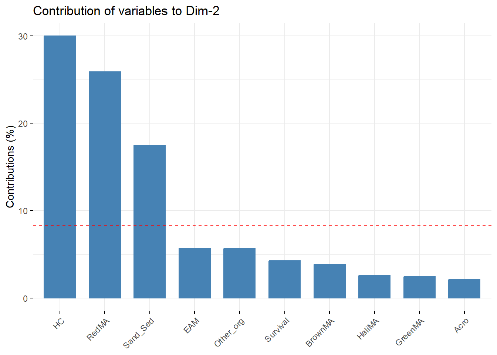
OUTPUT: BrownMA 31.6%, HaliMA 24.9%, Acro 21.0%, SoftCor 6.6%, rest
#Calculate exact values of contributions
contributions <- heron.pca$var$contrib
dim1_contributions <- contributions[, 1]
dim2_contributions <- contributions[, 2]#Create a data frame with the contributions and sort by strongest contributing variables for PC1
contributions1_df <- data.frame( Variable = rownames(contributions),
Contribution_Dim1 = dim1_contributions,
Contribution_Dim2 = dim2_contributions) |>
arrange(desc(Contribution_Dim1))
contributions1_df Variable Contribution_Dim1 Contribution_Dim2
EAM EAM 28.81767239 5.69532220
CCACyano CCACyano 23.48681928 0.05231051
HaliMA HaliMA 21.09100326 2.58522592
Sand_Sed Sand_Sed 10.85972514 17.47574461
Acro Acro 8.86499608 2.10567283
HC HC 2.25509828 29.97377137
Survival Survival 2.16137260 4.24879570
SC SC 1.33075117 0.07255293
Other_org Other_org 0.44005200 5.64065625
GreenMA GreenMA 0.35462360 2.46490705
BrownMA BrownMA 0.28369534 3.82078169
RedMA RedMA 0.05419086 25.86425893#Create a data frame with the contributions and sort by strongest contributing variables for PC2
contributions2_df <- data.frame( Variable = rownames(contributions),
Contribution_Dim1 = dim1_contributions,
Contribution_Dim2 = dim2_contributions) |>
arrange(desc(Contribution_Dim2))
contributions2_df Variable Contribution_Dim1 Contribution_Dim2
HC HC 2.25509828 29.97377137
RedMA RedMA 0.05419086 25.86425893
Sand_Sed Sand_Sed 10.85972514 17.47574461
EAM EAM 28.81767239 5.69532220
Other_org Other_org 0.44005200 5.64065625
Survival Survival 2.16137260 4.24879570
BrownMA BrownMA 0.28369534 3.82078169
HaliMA HaliMA 21.09100326 2.58522592
GreenMA GreenMA 0.35462360 2.46490705
Acro Acro 8.86499608 2.10567283
SC SC 1.33075117 0.07255293
CCACyano CCACyano 23.48681928 0.05231051Permanova
#scale data
Scaledheron <- scale(Heron[ 4:14])
#create dist-Matrix
dist_matrix <- vegdist(Scaledheron, method = "euclidean")
HeronPerm <- adonis2(dist_matrix ~ Site, data = Heron)
HeronPermPermutation test for adonis under reduced model
Terms added sequentially (first to last)
Permutation: free
Number of permutations: 999
adonis2(formula = dist_matrix ~ Site, data = Heron)
Df SumOfSqs R2 F Pr(>F)
Site 9 637.54 0.25874 8.3386 0.001 ***
Residual 215 1826.46 0.74126
Total 224 2464.00 1.00000
---
Signif. codes: 0 '***' 0.001 '**' 0.01 '*' 0.05 '.' 0.1 ' ' 1Output: Site is significant P=0.001)
Correlation plot
#corr plots to identify relationships
Heron[,-c(1:3)] %>%
cor %>%
corrplot(type='upper',
order='FPC',
diag=FALSE)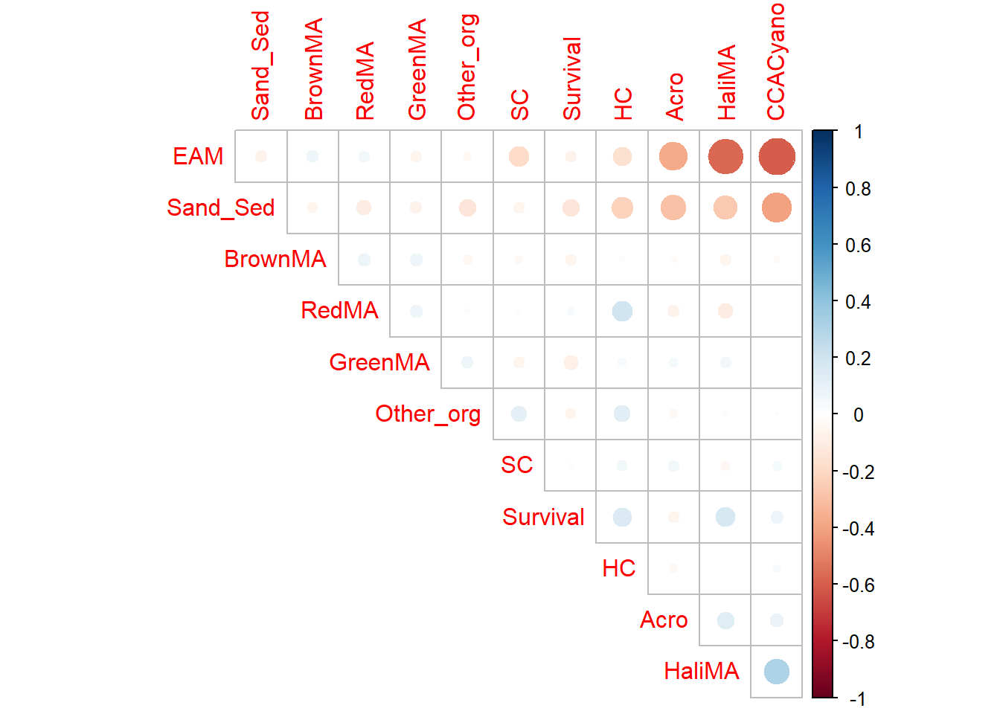
PCA: Survival by Site
#new dataset for PCA
Heron_short2 <- subset(Heron, select = -c(Site, ReefDev, Reef))
#Convert Survival to factor
Heron_short2 <- Heron_short2 |>
mutate(Survival=factor(Survival))
#PCA with new dataset to show survival vs no survival
heronsurv.pca <- PCA(Heron_short2[,-12])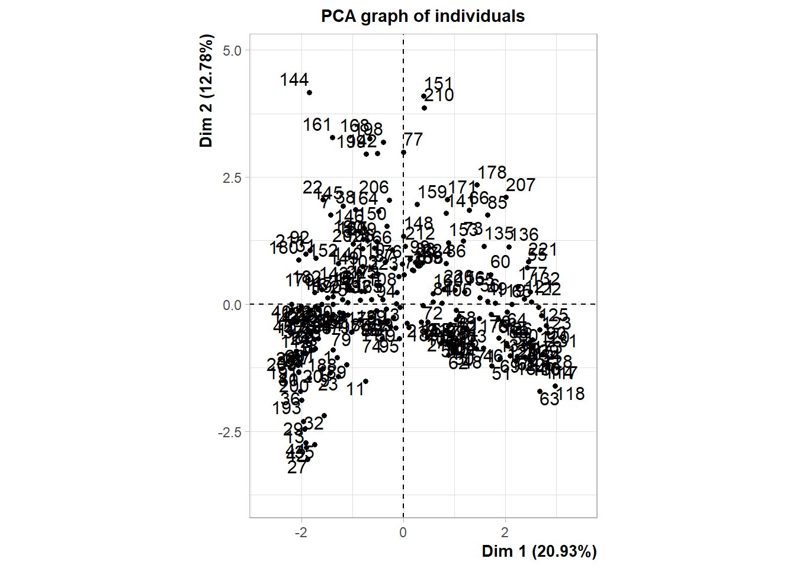
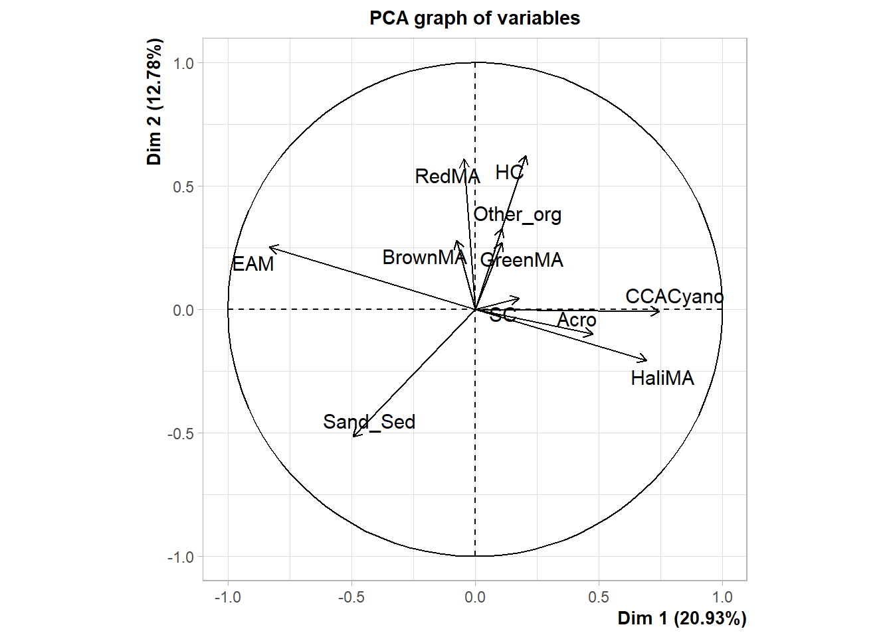
Figure 2
#Visualize PCA Biplot – FIGURE 2
plot_Heron_Survival <- fviz_pca_biplot(heronsurv.pca,
label = "var",
habillage=Heron_short2$Survival,
addEllipses=TRUE,
ellipse.level=0.95,
ggtheme = theme_minimal())
plot_Heron_Survival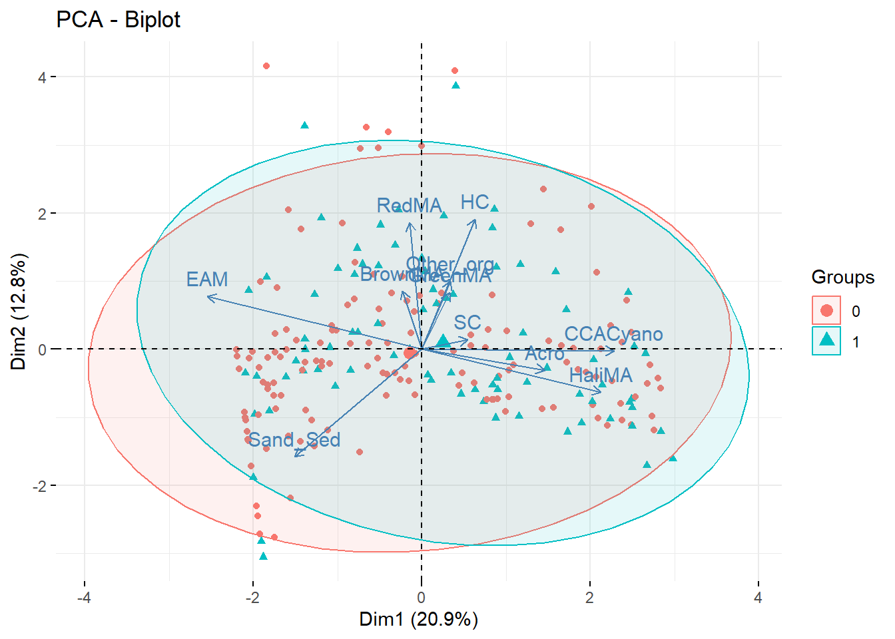
Permanova
#scale data
df_scaled <- scale(Heron_short2[ 1:11])
#create dist-Matrix
dist_matrix <- vegdist(df_scaled, method = "euclidean")
ResultSurvival <- adonis2(dist_matrix ~ Survival, data = Heron_short2)
ResultSurvivalPermutation test for adonis under reduced model
Terms added sequentially (first to last)
Permutation: free
Number of permutations: 999
adonis2(formula = dist_matrix ~ Survival, data = Heron_short2)
Df SumOfSqs R2 F Pr(>F)
Survival 1 22.74 0.00923 2.077 0.032 *
Residual 223 2441.26 0.99077
Total 224 2464.00 1.00000
---
Signif. codes: 0 '***' 0.001 '**' 0.01 '*' 0.05 '.' 0.1 ' ' 1Output: Significant variation between survival groups (p=0.026), but low R2 value.
Extract values and interpretation of values
# Extract eigenvalues (variance explained by each principal component)
eigenvalues <- heronsurv.pca$eig
#Extract variable contributions to the principal components
var_contributions <- heronsurv.pca$var$contrib
#Extract coordinates of the variables
var_coordinates <- heronsurv.pca$var$coord
#Extract the coordinates of the individuals
ind_coordinates <- heronsurv.pca$ind$coord
# Display the results
list( eigenvalues = eigenvalues,
var_contributions = var_contributions,
var_coordinates = var_coordinates)$eigenvalues
eigenvalue percentage of variance cumulative percentage of variance
comp 1 2.302512994 20.931936310 20.93194
comp 2 1.405269755 12.775179589 33.70712
comp 3 1.171132381 10.646658011 44.35377
comp 4 1.029955871 9.363235193 53.71701
comp 5 1.021050060 9.282273273 62.99928
comp 6 0.979760965 8.906917868 71.90620
comp 7 0.919793951 8.361763189 80.26796
comp 8 0.807542603 7.341296390 87.60926
comp 9 0.724518623 6.586532939 94.19579
comp 10 0.638300607 5.802732793 99.99853
comp 11 0.000162189 0.001474445 100.00000
$var_contributions
Dim.1 Dim.2 Dim.3 Dim.4 Dim.5
Sand_Sed 10.53368478 18.918585192 1.4607440 14.6713139 8.6662732
SC 1.38618513 0.154400996 38.1023204 0.4143173 7.9328398
BrownMA 0.23948116 5.593311363 16.1194894 0.7582146 2.1320714
GreenMA 0.50579398 5.253069769 9.3063749 7.0754959 36.7796331
HaliMA 20.91248340 3.028833925 2.2081272 0.5697811 6.6218089
RedMA 0.09179574 26.379431147 1.8466274 17.4549718 2.0847228
Other_org 0.51953745 7.656316686 24.0133431 12.5139674 19.6567793
EAM 30.02081803 4.585891230 0.6913222 7.9219182 1.7321996
CCACyano 24.10959983 0.003683977 0.8648624 4.6540966 0.6548238
Acro 9.84008685 0.709705883 0.9907280 23.8333031 13.4621353
HC 1.84053366 27.716769832 4.3960611 10.1326200 0.2767128
$var_coordinates
Dim.1 Dim.2 Dim.3 Dim.4 Dim.5
Sand_Sed -0.49248295 -0.515613378 0.13079467 -0.38872620 0.29746763
SC 0.17865355 0.046580581 0.66800345 0.06532447 -0.28460194
BrownMA -0.07425688 0.280358900 -0.43448885 0.08837011 -0.14754496
GreenMA 0.10791651 0.271697995 -0.33013629 0.26995275 0.61281193
HaliMA 0.69391112 -0.206308718 -0.16081073 -0.07660610 0.26002304
RedMA -0.04597400 0.608853157 -0.14705935 -0.42400296 -0.14589744
Other_org 0.10937284 0.328012047 0.53030938 0.35901023 0.44800174
EAM -0.83140438 0.253858509 -0.08997943 0.28564359 -0.13299107
CCACyano 0.74506823 -0.007195125 -0.10064136 -0.21894095 -0.08176844
Acro 0.47599294 -0.099866321 -0.10771600 0.49545182 -0.37074943
HC 0.20586045 0.624095652 0.22690019 -0.32305033 0.05315427Eigenvalues Dataframe - These represent the amount of variance explained by each principal component.
eigenvalues_df <- data.frame(Dimension = 1:nrow(eigenvalues),
Eigenvalue = eigenvalues[, 1],
PercentageOfVariance = eigenvalues[, 2],
CumulativePercentage = eigenvalues[, 3] )
print(eigenvalues_df) Dimension Eigenvalue PercentageOfVariance CumulativePercentage
comp 1 1 2.302512994 20.931936310 20.93194
comp 2 2 1.405269755 12.775179589 33.70712
comp 3 3 1.171132381 10.646658011 44.35377
comp 4 4 1.029955871 9.363235193 53.71701
comp 5 5 1.021050060 9.282273273 62.99928
comp 6 6 0.979760965 8.906917868 71.90620
comp 7 7 0.919793951 8.361763189 80.26796
comp 8 8 0.807542603 7.341296390 87.60926
comp 9 9 0.724518623 6.586532939 94.19579
comp 10 10 0.638300607 5.802732793 99.99853
comp 11 11 0.000162189 0.001474445 100.00000Variables contributions dataframe - These indicate how much each variable contributes to each principal component.
var_contributions_df <- as.data.frame(var_contributions)
print(var_contributions_df) Dim.1 Dim.2 Dim.3 Dim.4 Dim.5
Sand_Sed 10.53368478 18.918585192 1.4607440 14.6713139 8.6662732
SC 1.38618513 0.154400996 38.1023204 0.4143173 7.9328398
BrownMA 0.23948116 5.593311363 16.1194894 0.7582146 2.1320714
GreenMA 0.50579398 5.253069769 9.3063749 7.0754959 36.7796331
HaliMA 20.91248340 3.028833925 2.2081272 0.5697811 6.6218089
RedMA 0.09179574 26.379431147 1.8466274 17.4549718 2.0847228
Other_org 0.51953745 7.656316686 24.0133431 12.5139674 19.6567793
EAM 30.02081803 4.585891230 0.6913222 7.9219182 1.7321996
CCACyano 24.10959983 0.003683977 0.8648624 4.6540966 0.6548238
Acro 9.84008685 0.709705883 0.9907280 23.8333031 13.4621353
HC 1.84053366 27.716769832 4.3960611 10.1326200 0.2767128INTERPRETATION:
Eigenvalues: The first two principal components (PC1 and PC2) together explain approximately 30.91% of the total variance in the dataset. Including up to PC4, the cumulative variance explained is 51.90%, indicating that the first four components capture about half of the total variability.
Variable Contributions: PC1 is mainly driven by EAM, CCACyano, and HC, accounting for 18.13% of the variance. PC2 is significantly influenced by BrownMA, HaliMA, Acro, and SC, explaining 12.79% of the variance. PC3 is dominated by Acro and Other_org, accounting for 10.66% of the variance. PC4 sees contributions from RedMA, CCACyano, Other_org, HC, and GreenMA, explaining 10.33% of the variance. PC5 is heavily influenced by RedMA, explaining 9.01% of the variance.
The PCA results suggest that the different types of macroalgae (BrownMA, GreenMA, HaliMA, RedMA), other organisms (Other_org), and other environmental variables (EAM, CCACyano, HC) contribute differently to the variability in the data. The first few components capture a significant portion of this variability, indicating their importance in distinguishing sites.
GLMs
#GLMs - start with categories with highest contribution
glm_heron_CCACyano <- glm(Survival ~ CCACyano , data = Heron, family = "binomial")
summary(glm_heron_CCACyano)
Call:
glm(formula = Survival ~ CCACyano, family = "binomial", data = Heron)
Coefficients:
Estimate Std. Error z value Pr(>|z|)
(Intercept) -0.7130 0.2041 -3.494 0.000476 ***
CCACyano 0.4072 0.3821 1.066 0.286637
---
Signif. codes: 0 '***' 0.001 '**' 0.01 '*' 0.05 '.' 0.1 ' ' 1
(Dispersion parameter for binomial family taken to be 1)
Null deviance: 295.17 on 224 degrees of freedom
Residual deviance: 294.04 on 223 degrees of freedom
AIC: 298.04
Number of Fisher Scoring iterations: 4# CCACyano: Not significant (p-value = 0.286637)
glm_heron_EAM <- glm(Survival ~ EAM , data = Heron, family = "binomial")
summary(glm_heron_EAM)
Call:
glm(formula = Survival ~ EAM, family = "binomial", data = Heron)
Coefficients:
Estimate Std. Error z value Pr(>|z|)
(Intercept) -0.3397 0.2745 -1.237 0.216
EAM -0.4803 0.5308 -0.905 0.366
(Dispersion parameter for binomial family taken to be 1)
Null deviance: 295.17 on 224 degrees of freedom
Residual deviance: 294.35 on 223 degrees of freedom
AIC: 298.35
Number of Fisher Scoring iterations: 4# EAM: Not significant (p-value = 0.366)
glm_heron_Acro <- glm(Survival ~ Acro , data = Heron, family = "binomial")
summary(glm_heron_Acro)
Call:
glm(formula = Survival ~ Acro, family = "binomial", data = Heron)
Coefficients:
Estimate Std. Error z value Pr(>|z|)
(Intercept) -0.4734 0.1705 -2.776 0.00551 **
Acro -0.9703 1.1928 -0.813 0.41595
---
Signif. codes: 0 '***' 0.001 '**' 0.01 '*' 0.05 '.' 0.1 ' ' 1
(Dispersion parameter for binomial family taken to be 1)
Null deviance: 295.17 on 224 degrees of freedom
Residual deviance: 294.49 on 223 degrees of freedom
AIC: 298.49
Number of Fisher Scoring iterations: 4# Acro: Not significant (p-value = 0.41595)
glm_heron_BrownMA <- glm(Survival ~ BrownMA , data = Heron, family = "binomial")
summary(glm_heron_BrownMA)
Call:
glm(formula = Survival ~ BrownMA, family = "binomial", data = Heron)
Coefficients:
Estimate Std. Error z value Pr(>|z|)
(Intercept) -0.5407 0.1393 -3.882 0.000104 ***
BrownMA -25.5815 31.9978 -0.799 0.424014
---
Signif. codes: 0 '***' 0.001 '**' 0.01 '*' 0.05 '.' 0.1 ' ' 1
(Dispersion parameter for binomial family taken to be 1)
Null deviance: 295.17 on 224 degrees of freedom
Residual deviance: 294.20 on 223 degrees of freedom
AIC: 298.2
Number of Fisher Scoring iterations: 4# BrownMA: Not significant (p-value = 0.424014)
glm_heron_HaliMA <- glm(Survival ~ HaliMA , data = Heron, family = "binomial")
summary(glm_heron_HaliMA)
Call:
glm(formula = Survival ~ HaliMA, family = "binomial", data = Heron)
Coefficients:
Estimate Std. Error z value Pr(>|z|)
(Intercept) -0.7815 0.1669 -4.682 2.85e-06 ***
HaliMA 2.7126 1.0611 2.556 0.0106 *
---
Signif. codes: 0 '***' 0.001 '**' 0.01 '*' 0.05 '.' 0.1 ' ' 1
(Dispersion parameter for binomial family taken to be 1)
Null deviance: 295.17 on 224 degrees of freedom
Residual deviance: 288.41 on 223 degrees of freedom
AIC: 292.41
Number of Fisher Scoring iterations: 4#HaliMA: Significant (p-value = 0.0106, *) - Higher values of HaliMA increase the odds of survival.
glm_Heron_Sand <- glm(Survival ~ Sand_Sed , data = Heron, family = "binomial")
summary(glm_Heron_Sand)
Call:
glm(formula = Survival ~ Sand_Sed, family = "binomial", data = Heron)
Coefficients:
Estimate Std. Error z value Pr(>|z|)
(Intercept) -0.4142 0.1529 -2.709 0.00674 **
Sand_Sed -1.8416 0.9442 -1.951 0.05111 .
---
Signif. codes: 0 '***' 0.001 '**' 0.01 '*' 0.05 '.' 0.1 ' ' 1
(Dispersion parameter for binomial family taken to be 1)
Null deviance: 295.17 on 224 degrees of freedom
Residual deviance: 290.60 on 223 degrees of freedom
AIC: 294.6
Number of Fisher Scoring iterations: 4# Sand_Sed: Marginally significant (p-value = 0.05111, .) - Higher values of Sand_Sed decrease the odds of survival.
glm_Heron_HC <- glm(Survival ~ HC , data = Heron, family = "binomial")
summary(glm_Heron_HC)
Call:
glm(formula = Survival ~ HC, family = "binomial", data = Heron)
Coefficients:
Estimate Std. Error z value Pr(>|z|)
(Intercept) -0.8523 0.1906 -4.472 7.76e-06 ***
HC 4.2473 1.8078 2.349 0.0188 *
---
Signif. codes: 0 '***' 0.001 '**' 0.01 '*' 0.05 '.' 0.1 ' ' 1
(Dispersion parameter for binomial family taken to be 1)
Null deviance: 295.17 on 224 degrees of freedom
Residual deviance: 289.56 on 223 degrees of freedom
AIC: 293.56
Number of Fisher Scoring iterations: 4# HC: Significant (p-value = 0.0188) - Higher values of HC increase the odds of survival.
glm_Heron_SC <- glm(Survival ~ SC , data = Heron, family = "binomial")
summary(glm_Heron_SC)
Call:
glm(formula = Survival ~ SC, family = "binomial", data = Heron)
Coefficients:
Estimate Std. Error z value Pr(>|z|)
(Intercept) -0.5700 0.1495 -3.814 0.000137 ***
SC 0.7493 2.9960 0.250 0.802508
---
Signif. codes: 0 '***' 0.001 '**' 0.01 '*' 0.05 '.' 0.1 ' ' 1
(Dispersion parameter for binomial family taken to be 1)
Null deviance: 295.17 on 224 degrees of freedom
Residual deviance: 295.11 on 223 degrees of freedom
AIC: 299.11
Number of Fisher Scoring iterations: 4# SC: Not significant (p-value = 0.802508) SAVE FIGURES
#FIGURE 1
plot_heron_ComCompSite <- fviz_pca_biplot(heron.pca,
label = "var",
habillage=Heron_factor$Site,
addEllipses=TRUE,
ellipse.level=0.95,
ggtheme = theme_minimal()) +
ggtitle("Heron Reef") +
labs(color = "Sites", shape = "Sites") +
guides(color = guide_legend(title = "Sites"),
fill = guide_legend(title = "Sites"),
shape = guide_legend(title = "Sites"))
#FIGURE 2
plot_heron_Survival <- fviz_pca_biplot(heronsurv.pca,
label = "var",
habillage=Heron_short2$Survival,
addEllipses=TRUE,
ellipse.level=0.95,
ggtheme = theme_minimal()) +
ggtitle("Heron Reef") +
labs(color = "Survival", shape = "Survival") +
guides(color = guide_legend(title = "Survival"),
fill = guide_legend(title = "Survival"),
shape = guide_legend(title = "Survival"))
ggsave("C:/Users/sjurriaa/Australian Institute of Marine Science/Carly Randall - Randall Lab/CAD/CAD Year1/output/Community Composition/PCA_Heron_Sites.jpeg", plot = plot_heron_ComCompSite, width = 6, height = 4, dpi = 600)
ggsave("C:/Users/sjurriaa/Australian Institute of Marine Science/Carly Randall - Randall Lab/CAD/CAD Year1/output/Community Composition/PCA_Heron_Survival.jpeg", plot = plot_heron_Survival, width = 6, height = 4, dpi = 600)-------------------------------------------------------------------
MOORE
Moore <- Y1BenticSurv_pooled |> filter(Reef == "Moore")
#Filter rows to keep only those present in Y1 Survival
Moore <- Moore |>
filter(!is.na(Survival),
!is.na(Sand_Sed))PCA: Community Composition
#Remove variables you won't use in PCA
Moore_short <- subset(Moore, select = -c(Reef, ReefDev, Survival))
#PCA benthic cover data
Moore.pca <- PCA(Moore[,-c(1:3)])
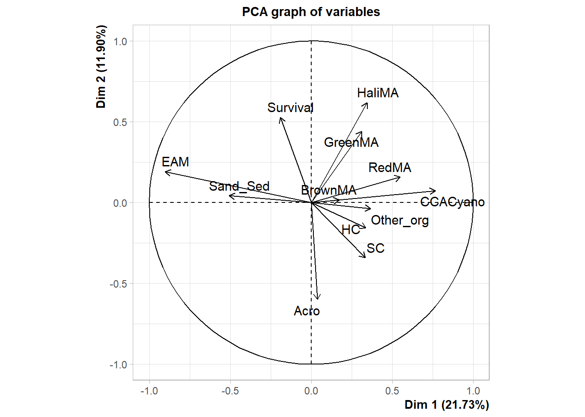
Moore_factor <- Moore|>
mutate(Site=factor(Site))Figure 1
pca_biplot_Moore<- fviz_pca_biplot(Moore.pca,
label = "var",
habillage=Moore_factor$Site,
addEllipses=TRUE,
ellipse.level=0.95,
ggtheme = theme_minimal())
plot_Moore_ComCompSite <- pca_biplot_Moore +
ggtitle("Moore Reef")
plot_Moore_ComCompSite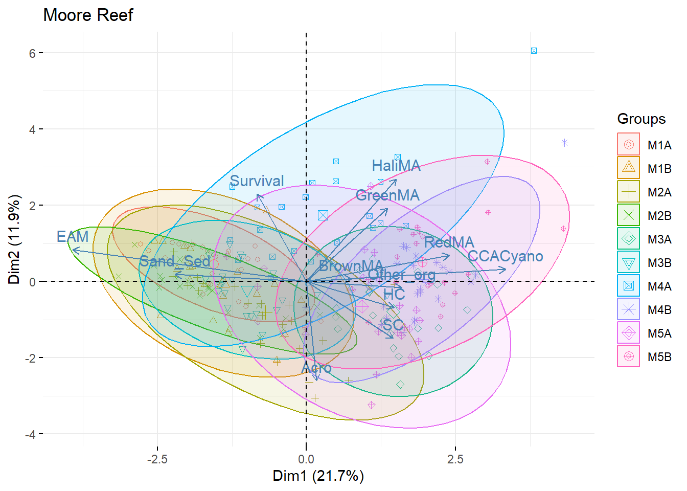
#Contributions of variables to Dim1
fviz_contrib(Moore.pca, choice = "var", axes = 1, top = 10)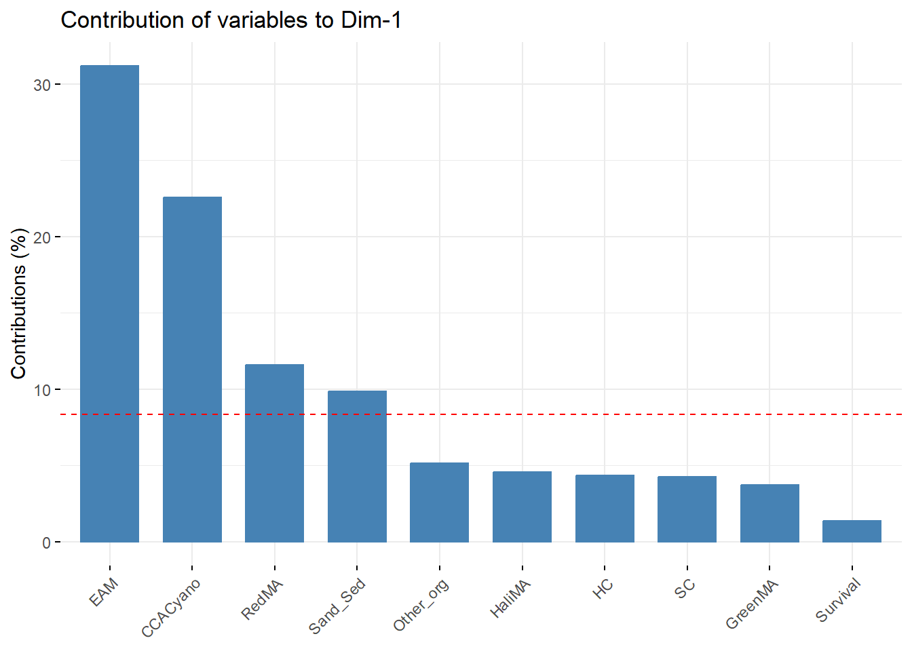
OUTPUT: EAM 31.1%, CCACyano 23.0%, RedMA 11.6%, Sand 10.23%, rest
#Contributions of variables to Dim2
fviz_contrib(Moore.pca, choice = "var", axes = 2, top = 10)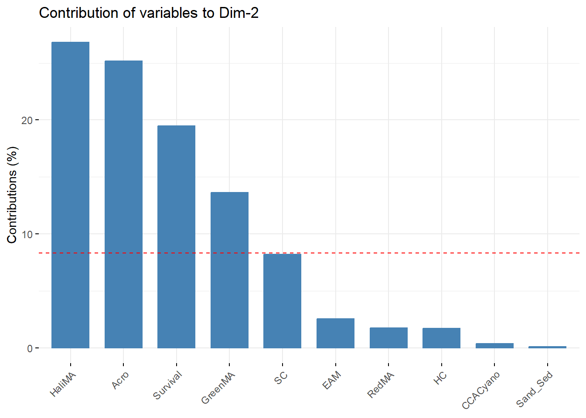
OUTPUT: Acro 30.9%, HaliMA 27.2%, GreenMA 16.3%, HC 8.9%, rest
#Calculate exact values of contributions
contributions <- Moore.pca$var$contrib
dim1_contributions <- contributions[, 1]
dim2_contributions <- contributions[, 2]#Create a data frame with the contributions and sort by strongest contributing variables for PC1
contributions1_df <- data.frame( Variable = rownames(contributions),
Contribution_Dim1 = dim1_contributions,
Contribution_Dim2 = dim2_contributions) |>
arrange(desc(Contribution_Dim1))
contributions1_df Variable Contribution_Dim1 Contribution_Dim2
EAM EAM 31.19150176 2.56451075
CCACyano CCACyano 22.57215174 0.37892408
RedMA RedMA 11.60404005 1.76218000
Sand_Sed Sand_Sed 9.87639267 0.12629606
Other_org Other_org 5.16604692 0.09693932
HaliMA HaliMA 4.58310829 26.82227565
HC HC 4.37029902 1.71435029
SC SC 4.27997161 8.20880770
GreenMA GreenMA 3.75091437 13.62408453
Survival Survival 1.40055884 19.49578704
BrownMA BrownMA 1.15013694 0.01991658
Acro Acro 0.05487779 25.18592800#Create a data frame with the contributions and sort by strongest contributing variables for PC2
contributions2_df <- data.frame( Variable = rownames(contributions),
Contribution_Dim1 = dim1_contributions,
Contribution_Dim2 = dim2_contributions) |>
arrange(desc(Contribution_Dim2))
contributions2_df Variable Contribution_Dim1 Contribution_Dim2
HaliMA HaliMA 4.58310829 26.82227565
Acro Acro 0.05487779 25.18592800
Survival Survival 1.40055884 19.49578704
GreenMA GreenMA 3.75091437 13.62408453
SC SC 4.27997161 8.20880770
EAM EAM 31.19150176 2.56451075
RedMA RedMA 11.60404005 1.76218000
HC HC 4.37029902 1.71435029
CCACyano CCACyano 22.57215174 0.37892408
Sand_Sed Sand_Sed 9.87639267 0.12629606
Other_org Other_org 5.16604692 0.09693932
BrownMA BrownMA 1.15013694 0.01991658Permanova
#scale data
ScaledMoore <- scale(Moore[ 4:14])
#create dist-Matrix
dist_matrix <- vegdist(ScaledMoore, method = "euclidean")
MoorePerm <- adonis2(dist_matrix ~ Site, data = Moore)
MoorePermPermutation test for adonis under reduced model
Terms added sequentially (first to last)
Permutation: free
Number of permutations: 999
adonis2(formula = dist_matrix ~ Site, data = Moore)
Df SumOfSqs R2 F Pr(>F)
Site 9 750.42 0.28785 10.24 0.001 ***
Residual 228 1856.58 0.71215
Total 237 2607.00 1.00000
---
Signif. codes: 0 '***' 0.001 '**' 0.01 '*' 0.05 '.' 0.1 ' ' 1OUTPUT: Site: p=0.001, meaning that differences in the data can be attributed to differences between the sites. Also, the R2 value is 0.28785, meaning that 28.78% of the variance in the data is explained by the differences between sites, which is substantial. This indicates that Site is an important factor in explaining variability in the data.
Correlation plot
#corr plots to identify relationships
Moore[,-c(1:3)] %>%
cor %>%
corrplot(type='upper',
order='FPC',
diag=FALSE)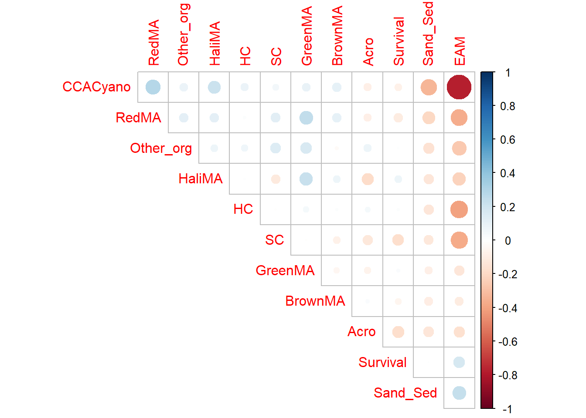
PCA: Survival by Site
#new dataset for PCA
Moore_short2 <- subset(Moore, select = -c(Site, ReefDev, Reef))
#PCA with new dataset to show survival vs no survival
Mooresurv.pca <- PCA(Moore_short2[,-12])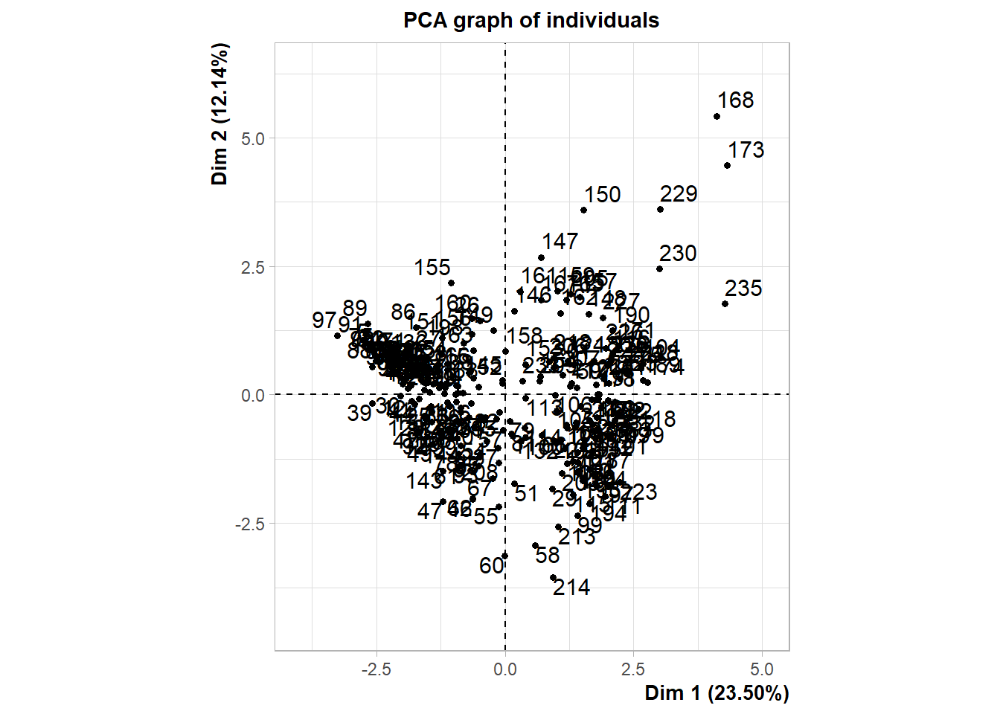
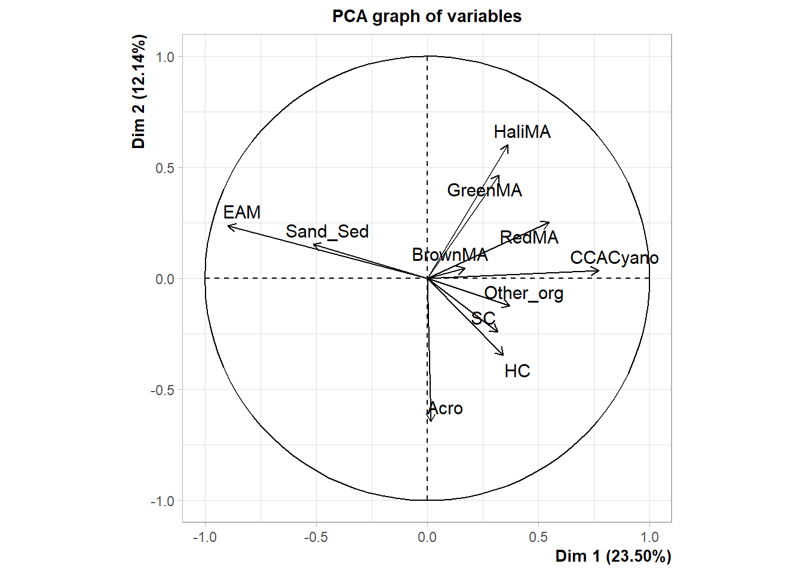
#Convert Survival to factor
Moore_short2_factor <- Moore_short2 |>
mutate(Survival=factor(Survival))Figure 2
#Visualize PCA Biplot – FIGURE 2
plot_Moore_Survival <- fviz_pca_biplot(Mooresurv.pca,
label = "var",
habillage=Moore_short2_factor$Survival,
addEllipses=TRUE,
ellipse.level=0.95,
ggtheme = theme_minimal())
plot_Moore_Survival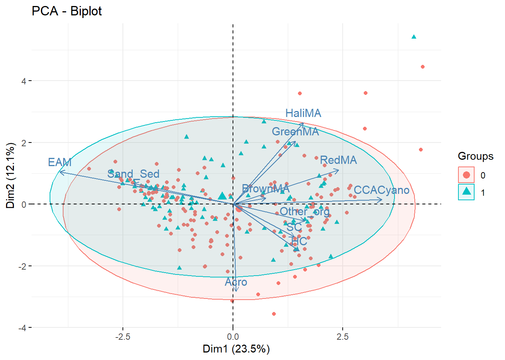
Permanova
#scale data
df_scaled <- scale(Moore_short2[ 1:11])
#create dist-Matrix
dist_matrix <- vegdist(df_scaled, method = "euclidean")
ResultSurvival <- adonis2(dist_matrix ~ Survival, data = Moore_short2)
ResultSurvivalPermutation test for adonis under reduced model
Terms added sequentially (first to last)
Permutation: free
Number of permutations: 999
adonis2(formula = dist_matrix ~ Survival, data = Moore_short2)
Df SumOfSqs R2 F Pr(>F)
Survival 1 27.75 0.01065 2.5394 0.014 *
Residual 236 2579.25 0.98935
Total 237 2607.00 1.00000
---
Signif. codes: 0 '***' 0.001 '**' 0.01 '*' 0.05 '.' 0.1 ' ' 1Output: strong significant difference between survival groups (p=0.008). But low R2 (0.01065), which means only 1.065% of variance is explained by survival)
Extract values and interpretation of values
# Extract eigenvalues (variance explained by each principal component)
eigenvalues <- Mooresurv.pca$eig
#Extract variable contributions to the principal components
var_contributions <- Mooresurv.pca$var$contrib
#Extract coordinates of the variables
var_coordinates <- Mooresurv.pca$var$coord
#Extract the coordinates of the individuals
ind_coordinates <- Mooresurv.pca$ind$coord
# Display the results
list( eigenvalues = eigenvalues,
var_contributions = var_contributions,
var_coordinates = var_coordinates )$eigenvalues
eigenvalue percentage of variance cumulative percentage of variance
comp 1 2.585440303 23.50400276 23.50400
comp 2 1.335088873 12.13717157 35.64117
comp 3 1.202868483 10.93516803 46.57634
comp 4 1.105659312 10.05144829 56.62779
comp 5 1.011895643 9.19905130 65.82684
comp 6 0.863240743 7.84764311 73.67449
comp 7 0.846938332 7.69943938 81.37392
comp 8 0.786099628 7.14636026 88.52028
comp 9 0.664613985 6.04194532 94.56223
comp 10 0.592247992 5.38407266 99.94630
comp 11 0.005906706 0.05369733 100.00000
$var_contributions
Dim.1 Dim.2 Dim.3 Dim.4 Dim.5
Sand_Sed 10.203096844 1.73365961 3.12146960 0.9441013 8.538552053
SC 3.902275155 4.35839942 41.97482740 9.6767517 2.034866449
BrownMA 1.118427070 0.15800606 26.78374423 9.1282625 13.630861327
GreenMA 4.050467887 16.26931514 1.81085070 28.2059026 0.003147521
HaliMA 5.136283655 27.03826445 4.78690668 1.3830289 3.382660563
RedMA 11.612372556 4.82178788 0.68721073 0.2565882 10.095564293
Other_org 5.371279104 1.14353082 7.29296016 22.8108559 5.427315713
EAM 31.039308901 4.23964133 0.07860784 1.3681918 3.318290395
CCACyano 23.000712396 0.08909215 2.09259330 7.6393137 0.601577892
Acro 0.009838206 31.14720940 9.61037961 16.7330190 6.148267893
HC 4.555938226 9.00109374 1.76044976 1.8539844 46.818895900
$var_coordinates
Dim.1 Dim.2 Dim.3 Dim.4 Dim.5
Sand_Sed -0.5136098 0.15213776 -0.19377093 -0.10216919 -0.293940872
SC 0.3176334 -0.24122294 -0.71056454 -0.32709617 0.143494686
BrownMA 0.1700478 0.04592953 0.56760305 -0.31769086 0.371389407
GreenMA 0.3236085 0.46605774 -0.14758778 0.55844533 0.005643548
HaliMA 0.3644112 0.60082016 0.23995873 0.12365916 -0.185010797
RedMA 0.5479334 0.25372259 -0.09091887 -0.05326341 0.319619422
Other_org 0.3726543 -0.12356032 -0.29618359 0.50220549 0.234347544
EAM -0.8958252 0.23791381 0.03074978 0.12299407 0.183242015
CCACyano 0.7711483 0.03448854 0.15865417 -0.29062826 -0.078021410
Acro 0.0159487 -0.64485884 0.34000033 0.43012810 0.249427454
HC 0.3432070 -0.34665920 0.14551940 0.14317385 -0.688301073Eigenvalues Dataframe - These represent the amount of variance explained by each principal component.
eigenvalues_df <- data.frame(Dimension = 1:nrow(eigenvalues),
Eigenvalue = eigenvalues[, 1],
PercentageOfVariance = eigenvalues[, 2],
CumulativePercentage = eigenvalues[, 3] )
print(eigenvalues_df) Dimension Eigenvalue PercentageOfVariance CumulativePercentage
comp 1 1 2.585440303 23.50400276 23.50400
comp 2 2 1.335088873 12.13717157 35.64117
comp 3 3 1.202868483 10.93516803 46.57634
comp 4 4 1.105659312 10.05144829 56.62779
comp 5 5 1.011895643 9.19905130 65.82684
comp 6 6 0.863240743 7.84764311 73.67449
comp 7 7 0.846938332 7.69943938 81.37392
comp 8 8 0.786099628 7.14636026 88.52028
comp 9 9 0.664613985 6.04194532 94.56223
comp 10 10 0.592247992 5.38407266 99.94630
comp 11 11 0.005906706 0.05369733 100.00000Variables contributions dataframe - These indicate how much each variable contributes to each principal component.
var_contributions_df <- as.data.frame(var_contributions)
print(var_contributions_df) Dim.1 Dim.2 Dim.3 Dim.4 Dim.5
Sand_Sed 10.203096844 1.73365961 3.12146960 0.9441013 8.538552053
SC 3.902275155 4.35839942 41.97482740 9.6767517 2.034866449
BrownMA 1.118427070 0.15800606 26.78374423 9.1282625 13.630861327
GreenMA 4.050467887 16.26931514 1.81085070 28.2059026 0.003147521
HaliMA 5.136283655 27.03826445 4.78690668 1.3830289 3.382660563
RedMA 11.612372556 4.82178788 0.68721073 0.2565882 10.095564293
Other_org 5.371279104 1.14353082 7.29296016 22.8108559 5.427315713
EAM 31.039308901 4.23964133 0.07860784 1.3681918 3.318290395
CCACyano 23.000712396 0.08909215 2.09259330 7.6393137 0.601577892
Acro 0.009838206 31.14720940 9.61037961 16.7330190 6.148267893
HC 4.555938226 9.00109374 1.76044976 1.8539844 46.818895900INTERPRETATION:
Eigenvalues: The cumulative variance explained by the first two principal components (PC1 and PC2) is 35.60%. Including up to PC4, the cumulative variance explained reaches 56.60%, indicating that these four components capture over half of the total variability in the benthic community composition.
Variable Contributions: PC1 is mainly driven by EAM, CCACyano, Sand and RedMA, accounting for 23.46% of the variance. PC2 is significantly influenced by Acro, HaliMA, GreenMA, and HC, explaining 12.14% of the variance. PC3 is dominated by SC, BrownMA and ACro, accounting for 10.94% of the variance. PC4 sees contributions from GreenMA, Other_org, and Acro, explaining 10.06% of the variance.
#The analysis identifies EAM, CCACyano, and Sand_Sed as primary drivers of community composition along the first principal component.The high proportion of variance explained by the first four principal components indicates substantial environmental heterogeneity within Moore Reef.
GLMs
#GLMs - start with categories with highest contribution
glm_Moore_CCACyano <- glm(Survival ~ CCACyano , data = Moore, family = "binomial")
summary(glm_Moore_CCACyano)
Call:
glm(formula = Survival ~ CCACyano, family = "binomial", data = Moore)
Coefficients:
Estimate Std. Error z value Pr(>|z|)
(Intercept) -0.3998 0.1888 -2.117 0.0342 *
CCACyano -0.3500 0.3124 -1.120 0.2626
---
Signif. codes: 0 '***' 0.001 '**' 0.01 '*' 0.05 '.' 0.1 ' ' 1
(Dispersion parameter for binomial family taken to be 1)
Null deviance: 312.51 on 237 degrees of freedom
Residual deviance: 311.23 on 236 degrees of freedom
AIC: 315.23
Number of Fisher Scoring iterations: 4# p-value: 0.2626 (Not significant)
glm_Moore_EAM <- glm(Survival ~ EAM , data = Moore, family = "binomial")
summary(glm_Moore_EAM)
Call:
glm(formula = Survival ~ EAM, family = "binomial", data = Moore)
Coefficients:
Estimate Std. Error z value Pr(>|z|)
(Intercept) -1.1101 0.2598 -4.274 1.92e-05 ***
EAM 1.2098 0.4636 2.610 0.00906 **
---
Signif. codes: 0 '***' 0.001 '**' 0.01 '*' 0.05 '.' 0.1 ' ' 1
(Dispersion parameter for binomial family taken to be 1)
Null deviance: 312.51 on 237 degrees of freedom
Residual deviance: 305.50 on 236 degrees of freedom
AIC: 309.5
Number of Fisher Scoring iterations: 4#p-value: 0.00906 (Significant) - As EAM increases, the odds of survival increase.
glm_Moore_Acro <- glm(Survival ~ Acro , data = Moore, family = "binomial")
summary(glm_Moore_Acro)
Call:
glm(formula = Survival ~ Acro, family = "binomial", data = Moore)
Coefficients:
Estimate Std. Error z value Pr(>|z|)
(Intercept) -0.3027 0.1588 -1.905 0.05674 .
Acro -4.7410 1.8129 -2.615 0.00892 **
---
Signif. codes: 0 '***' 0.001 '**' 0.01 '*' 0.05 '.' 0.1 ' ' 1
(Dispersion parameter for binomial family taken to be 1)
Null deviance: 312.51 on 237 degrees of freedom
Residual deviance: 304.04 on 236 degrees of freedom
AIC: 308.04
Number of Fisher Scoring iterations: 4#p-value: 0.00892 (Significant) - As Acro increases, the odds of survival decrease.
glm_Moore_BrownMA <- glm(Survival ~ BrownMA , data = Moore, family = "binomial")
summary(glm_Moore_BrownMA)
Call:
glm(formula = Survival ~ BrownMA, family = "binomial", data = Moore)
Coefficients:
Estimate Std. Error z value Pr(>|z|)
(Intercept) -0.5224 0.1384 -3.775 0.00016 ***
BrownMA -15.4405 18.5796 -0.831 0.40595
---
Signif. codes: 0 '***' 0.001 '**' 0.01 '*' 0.05 '.' 0.1 ' ' 1
(Dispersion parameter for binomial family taken to be 1)
Null deviance: 312.51 on 237 degrees of freedom
Residual deviance: 311.75 on 236 degrees of freedom
AIC: 315.75
Number of Fisher Scoring iterations: 4#p-value: 0.40595 (Not significant)
glm_Moore_HaliMA <- glm(Survival ~ HaliMA , data = Moore, family = "binomial")
summary(glm_Moore_HaliMA)
Call:
glm(formula = Survival ~ HaliMA, family = "binomial", data = Moore)
Coefficients:
Estimate Std. Error z value Pr(>|z|)
(Intercept) -0.6186 0.1492 -4.147 3.37e-05 ***
HaliMA 2.6544 2.4626 1.078 0.281
---
Signif. codes: 0 '***' 0.001 '**' 0.01 '*' 0.05 '.' 0.1 ' ' 1
(Dispersion parameter for binomial family taken to be 1)
Null deviance: 312.51 on 237 degrees of freedom
Residual deviance: 311.36 on 236 degrees of freedom
AIC: 315.36
Number of Fisher Scoring iterations: 4#p-value: 0.281 (Not significant)
glm_Moore_Sand <- glm(Survival ~ Sand_Sed , data = Moore, family = "binomial")
summary(glm_Moore_Sand)
Call:
glm(formula = Survival ~ Sand_Sed, family = "binomial", data = Moore)
Coefficients:
Estimate Std. Error z value Pr(>|z|)
(Intercept) -0.5544 0.1454 -3.814 0.000137 ***
Sand_Sed 0.1086 1.9386 0.056 0.955343
---
Signif. codes: 0 '***' 0.001 '**' 0.01 '*' 0.05 '.' 0.1 ' ' 1
(Dispersion parameter for binomial family taken to be 1)
Null deviance: 312.51 on 237 degrees of freedom
Residual deviance: 312.51 on 236 degrees of freedom
AIC: 316.51
Number of Fisher Scoring iterations: 4#p-value: 0.955343 (Not significant)SAVE FIGURES
#FIGURE 1
plot_Moore_ComCompSite <- fviz_pca_biplot(Moore.pca,
label = "var",
habillage=Moore_factor$Site,
addEllipses=TRUE,
ellipse.level=0.95,
ggtheme = theme_minimal()) +
ggtitle("Moore Reef") +
labs(color = "Sites", shape = "Sites") +
guides(color = guide_legend(title = "Sites"),
fill = guide_legend(title = "Sites"),
shape = guide_legend(title = "Sites"))
#FIGURE 2
plot_Moore_Survival <- fviz_pca_biplot(Mooresurv.pca,
label = "var",
habillage=Moore_short2_factor$Survival,
addEllipses=TRUE,
ellipse.level=0.95,
ggtheme = theme_minimal()) +
ggtitle("Moore Reef") +
labs(color = "Survival", shape = "Survival") +
guides(color = guide_legend(title = "Survival"),
fill = guide_legend(title = "Survival"),
shape = guide_legend(title = "Survival"))
ggsave("C:/Users/sjurriaa/Australian Institute of Marine Science/Carly Randall - Randall Lab/CAD/CAD Year1/output/Community Composition/PCA_Moore_Sites.jpeg", plot = plot_Moore_ComCompSite, width = 6, height = 4, dpi = 600)
ggsave("C:/Users/sjurriaa/Australian Institute of Marine Science/Carly Randall - Randall Lab/CAD/CAD Year1/output/Community Composition/PCA_Moore_Survival.jpeg", plot = plot_Moore_Survival, width = 6, height = 4, dpi = 600)#Plotting significant results
ggplot(Moore, aes(x = Acro, y = Survival)) +
geom_point() +
geom_smooth(method = "glm", method.args = list(family = "binomial"), se = TRUE) +
theme_bw() +
labs(title = "Effect of Acropora on Survival", x = "Acropora abundance", y = "Survival (%)") `geom_smooth()` using formula = 'y ~ x'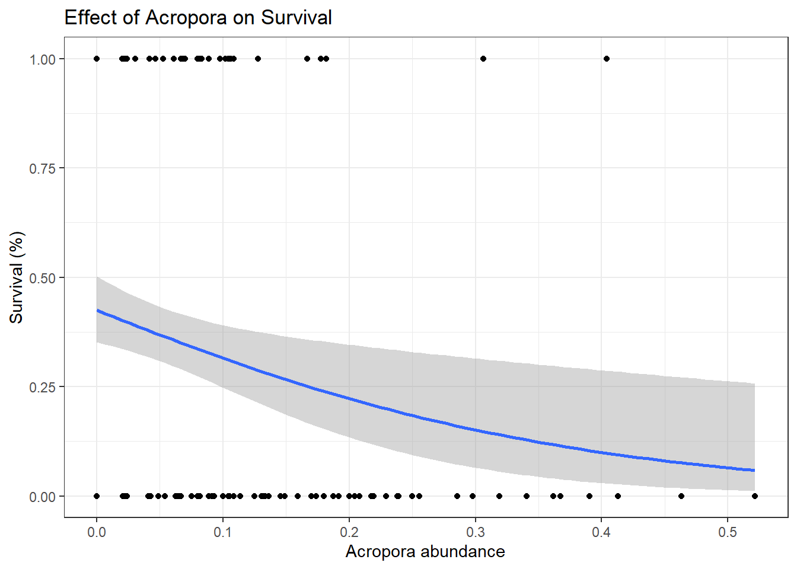
ggplot(Moore, aes(x = EAM, y = Survival)) +
geom_point() + geom_smooth(method = "glm", method.args = list(family = "binomial"), se = TRUE) +
theme_bw() +
labs(title = "Effect of EAM on Survival", x = "Epilithic Algal Matrix", y = "Survival (%)") `geom_smooth()` using formula = 'y ~ x'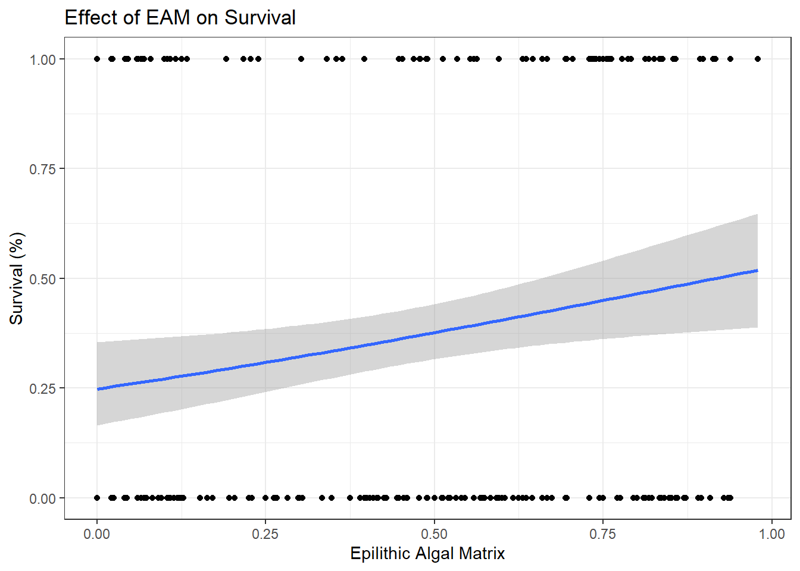